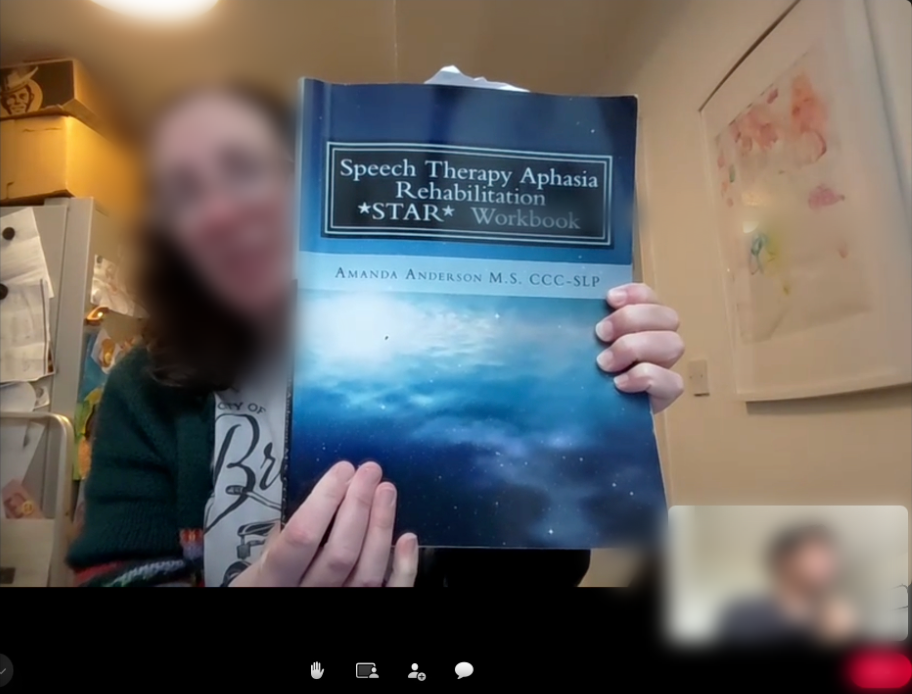
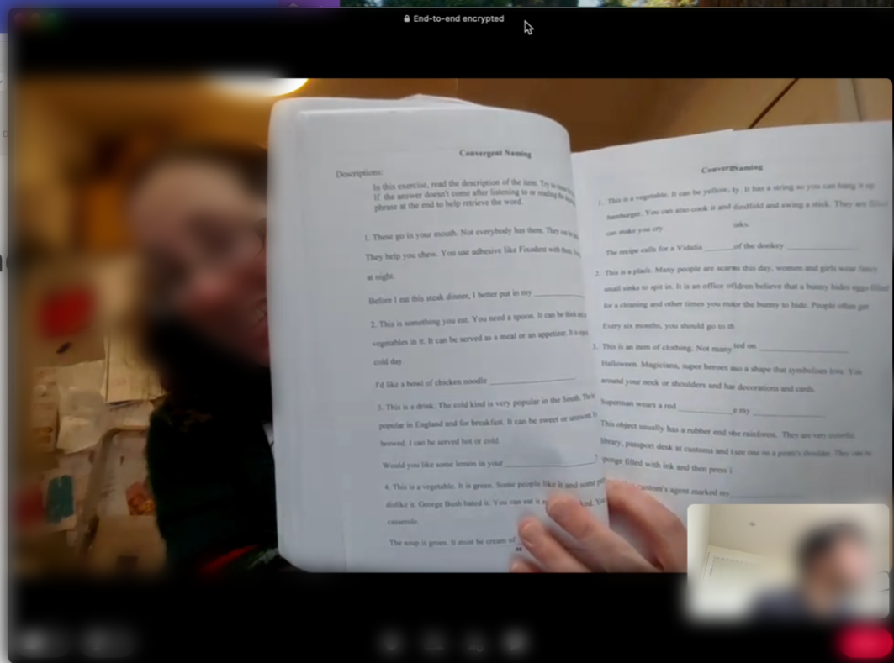
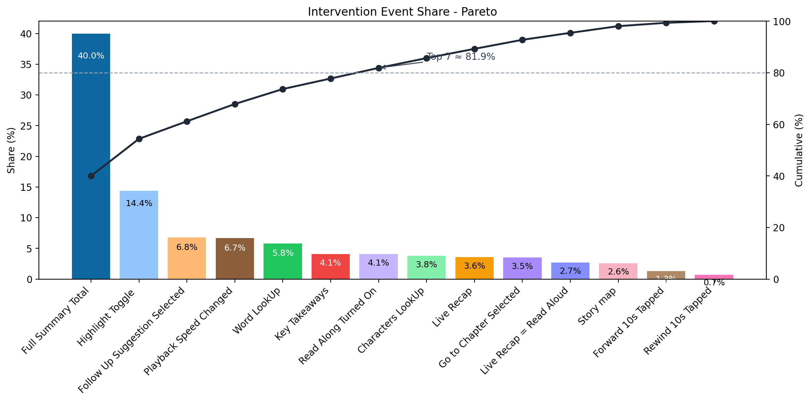
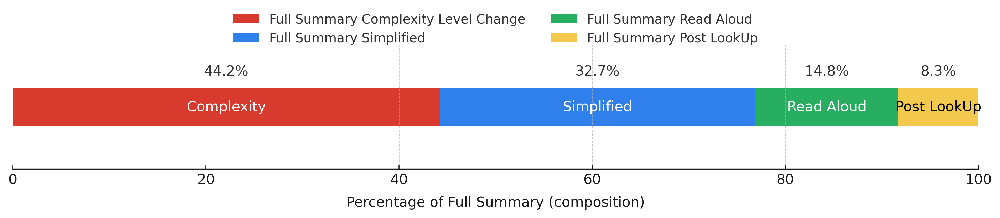
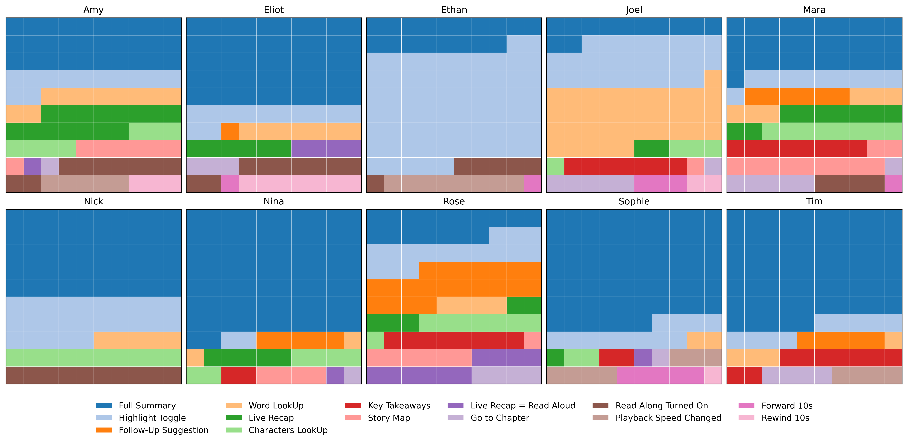

A Sound Understanding — An In-Situ Deployment of an Accessible Audio-Media Player with People Living with Aphasia
Authors
- Filip Bircanin, King’s College London, London, UK. filip.bircanin@kcl.ac.uk
- Alexandre Nevsky, King’s College London, London, UK. alexandre.nevsky@kcl.ac.uk
- Madeline Cruice, City St. George’s, University of London, London, UK. m.cruice@citystgeorges.ac.uk
- Ognjen Markovic, Aparteko, Belgrade, Serbia. ognjen.markovic@aparteko.com
- Timothy Neate, King’s College London, London, UK. timothy.neate@kcl.ac.uk
Proceedings of the 2026 CHI Conference on Human Factors in Computing Systems (CHI ’26), April 13–17, 2026, Barcelona, Spain
Abstract
Audio media – radio, podcasts, audiobooks – structures everyday life: we keep up, wind down, and share moments through long-form listening. Yet for people living with aphasia – a communication disability that affects audio comprehension – unsupported audio often means losing the thread and marring the experience. While accessibility advances have focused on print, web, and audiovisual content, audio-only remains unconsidered; oftentimes optimised for marketisation rather than sustained understanding. We report a three-week in-situ deployment of Re-Connect app, an audio media player which meets the people at the moment of comprehension difficulty. With ten adults living with aphasia, we show how people assemble personal repertoires of small, co-present communication cues that repair in the moment and support recall. Grounded in lived experience, we argue for personal, source-proximate scaffolds that help make long-form audio more understandable and enjoyable.
CCS Concepts
Human-centered computing: Accessibility theory, concepts and paradigms
Keywords
- Accessibility
- aphasia
- audio
- deployment
- complex communication
Introduction
Ensuring inclusive access to audio media is essential. Alongside the growth of other audio tools, formats like podcasts, audiobooks, music streaming apps, and radio dramas have become increasingly popular. The audiobook industry provides a telling example: after eight consecutive years of double-digit revenue growth, audiobooks became particularly important during the pandemic [62]. 2024 OFCOM (UK Office for Communication) report [57] highlights the importance of audio media – 92% of people in the UK listen to some form of audio content (e.g., radio, podcasts, or audiobooks), at least once a week. Similarly, BBC media report [11] states that in Q3 2024 there were 4.6 million users across the mobile app, website, TV and voice activated devices with a total of 226 million plays of on-demand radio and podcast content. Spotify, the largest audio platform with almost 700 million active monthly users, offers 200,000+ audiobook titles [74]. Notably, increased listening habits also include older audiences; the UK-based Entertainment Retailers Association identified the “over 55” group as the fastest growing audience [7]. However, the industry coverage and the advancements are still driven mainly by the habits and interests of younger audiences and neurotypical listeners. Recently, [14] have brought attention to accessible audio media listening raising concerns about the current under-representation of disabled audio media consumers, especially a group of people living with complex communication needs (CCN).
Research on accessibility in audio-only media is sparse, primarily focused on auditory impairments (e.g., [85, 86]) and with a larger share of accessible research on audiovisual media and focusing on sensory disabilities (see [55] for a review). Ongoing developments – such as internet-delivered content with high potential for individualisation [5, 6] – offer opportunities to bridge this gap and extend accessibility to diverse audiences. However, despite the promise of these advancements, we still lack a clear understanding of how such interventions can support users with CCN and address their unique challenges. This study is focused on such under-represented group of audio media listeners – people living with aphasia. Aphasia is a language impairment that can affect a person’s reading, writing, speaking, and listening abilities, often resulting from a stroke or other brain injury [33, 53]. However, it is important to recognise that aphasia does not impact a person’s intelligence, ability to form opinions, or problem-solving abilities, leaving certain cognitive capacities intact [80].The nature and severity of aphasia can vary from person to person, which means that individuals living with aphasia may experience the same piece of audio-media in vastly different ways.
This paper advances the agenda of audio-media accessibility through an in situ study of the Re-Connect app, a podcast player designed with and for people with aphasia. The app integrates accessible features such as read-along highlighting, multi-level summaries, adjustable pacing, chapter-based navigation, glossary look-ups, and quick “return to sense-making” tools. Following an Research Through Design (RtD) methodology [94] we report findings from a three-week field deployment with people living with aphasia, examining how they appropriate combinations of these interventions in everyday listening.
Against this backdrop, we ask: How do adults living with aphasia appropriate and combine accessible audio-media features in an aphasia-friendly podcast app during everyday listening, and how can these appropriations inform platform-level audio accessibility design?
Our contributions are threefold: (1) an empirical account of real-world audio media use by listeners with aphasia; (2) first in situ deployment of audio media accessibility features that support people living with aphasia and (3) key design guidelines for platform-level audio media accessibility that offers better audio content comprehension and navigation.
Related Work
Aphasia Auditory Comprehension Difficulties
People living with aphasia (PWA) frequently experience auditory comprehension breakdowns, often as a result of speech that is too fast – lexically, syntactically, and temporally. Often, lexical activation and integration are slowed, so people living with aphasia might need more time (and/or better advance cues) to stabilise a word’s meaning and bind it into the unfolding sentence [10]. Classic cueing effects – shorter words, higher imageability, semantic/phonetic support, repetition priming, and brief response delays – reliably boost performance [52].
Many people with aphasia have trouble noticing quick changes in speech sounds, which makes it hard to follow how speech flows naturally. This ‘smearing’ of sounds can cause mix-ups or misunderstandings, especially when cues are weak [42]. These challenges get worse in noisy or busy places, such as group conversations, cafés, or transport hubs, where background noise and multiple voices compete for attention [81]. In these real-life situations, it becomes even harder to focus on the speaker, making it difficult to understand and follow the conversation. For instance, eye-tracking evidence shows that a small, well-placed pause before a critical noun can lift comprehension for both PWA and neurotypical controls by giving lexical activation time to “catch up” [9]. Put simply, by the time a PWA recognises a word, the syntactic slot it must fill may have already scrolled past [2].
Cognition – especially verbal working memory and temporal order processing – further constrains what listeners can hold, integrate, and retrieve. PWA with poorer auditory comprehension tend to score lower on verbal working memory and on tasks requiring detection of rapid sequences or judging the order of brief tones [20]. Missed micro-silences make clause boundaries bleed into one another where by the end of a sentence, the beginning is no longer reliably in mind. In continuous media (radio, podcasts, audiobooks), this often results in a characteristic drift where listeners lose track of the narrative – not due to lack of interest, but because the temporal cues provided are insufficient to fully support their memory needs [14].
It is important to emphasise that most studies on auditory comprehension challenges in people living with aphasia draw from short, laboratory-based investigations conducted in carefully controlled, therapist-led environments [27, 82]. There remains a notable gap in our understanding of how people with aphasia manage long-form listening in everyday contexts – where ambient noise, divided attention, varying interest levels, and fluctuating energy demands impose additional challenges [24, 47]. Consequently, real-world listening environments such as social gatherings or busy public spaces can further impair comprehension and participation [25]. Moreover, there is still little development of personalisation strategies tailored to the individual needs of people living with aphasia [55]. Furthermore, previous research [14] highlights both pathways and opportunities to translate envisioned audio media futures and broad guidelines into practical, accessible features for aphasia support.
Media Accessibility
Screen-based media, audio-only formats, and social media are no longer just ways to communicate; they actively support participation by connecting people into social networks, amplifying civic voices, and carrying culture forward [51, 56, 91, 93]. In this context, accessibility is not simply an optional extra but a fundamental requirement to ensure everyone can participate fairly and equally.
Recently, there has been notable progress in improving accessibility for audiovisual content, reflected in updated broadcasting guidelines and industry practices [69]. Much of this progress builds on the foundation laid by audiovisual translation techniques such as subtitling, dubbing, adaptations, voice-over, audio description, sign interpreting, and re-speaking [17]. Human-Computer Interaction (HCI) has largely followed suit, prioritising captioning and description technologies [40, 43, 58, 59, 65]. Although [48] note a welcome growth in overall accessibility research, audiovisual HCI work still predominantly centres on hearing and visual impairments and the traditional “screen viewing” contexts [55]; 93.9% of research is directed at work with hard of hearing (DDH) and blind and visually impaired (BVI) communities. Meanwhile, media consumption has shifted strongly toward internet-native platforms like TikTok and live streaming [26, 32, 67], where interactivity and customisability are standard. This shift broadens the design opportunities for accessibility, yet research often remains anchored to familiar television-like environments and existing accessibility supports [55].
Emerging AI capabilities have the potential to increase design opportunities for access significantly. Deep learning and Large Language Models (LLMs) now make it feasible to generate audience-aware scaffolds – e.g., simplified summaries of long or complex material [28] – and even to offer “instant” summaries on-the-fly 1. These tools create an opportunity to design beyond making content merely available, toward making it meaningfully understandable and navigable for different users [71]. Yet, audio-only media has conspicuously lagged behind these advances [22]. In much of the literature, audio access appears either as a component inside audiovisual interventions or as access to non-digital environments [34], rather than as a primary focus for radio, podcasts, and audiobooks. Radio remains widely used [89]; at the same time, the category of “sound media” itself has changed, blurring the boundaries between hearing and seeing [13].
Crucially, the audience for audio accessibility must extend beyond the traditional focus on hearing and vision to include people with CCN, such as those living with aphasia [14]. For these listeners, accessibility is as much about sense-making as it is about signal quality and listening. Supports for pacing, segmentation, advance organisers, and simplified comprehension cues can be as important as transcripts and captions. While workshop studies and short demo evaluations are beginning to explore such supports [14], there is an absence of longitudinal, in situ deployments that examine how accessible audio tools are actually taken up – how they fold into routines, how preferences and energy budgets shape use, and how benefits persist (or fade) over weeks and months.
Media accessibility is foundational to social, civic, and cultural participation [51, 56, 91, 93]. The research community has built powerful practices for audiovisual contexts [17, 40, 43, 58, 59, 65, 69], but audio-only media remains under-served even as “listening” becomes hybrid and ubiquitous [13, 26, 32, 55, 67, 89]. The next wave of research should prioritise audio accessibility, leverage AI judiciously [28], invest in information-access companions [36], and study these interventions in situ [14].
Methodology
In this section, we outline the overarching Research-through-Design (RtD) methodological approach that guided our project, comprising four distinct but interconnected stages. It guided our project providing a flexible, reflective framework [76] exploring audio media challenges through different scenarios. Initially, we treated ideas, sketches, GPT mock-up collaborative sessions as artefacts [29] iterating through creative refinement and casual feedback engagements with people at the charity. A piloting stage then yielded critical reflections that informed adaptations. Deployment immersed the project in real-world use where emergent issues shaped further iterations (i.e., deciding to create log-vignettes). In this study, we primarily focus on the final stage results, both because it offers a systematic presentation of overarching data and because it yielded valuable lessons for equitable access to audio media. We next discuss our study design, outlining how the key features of the Re-Connect app (Section 3.2.3) emerged.
Study Design
In practice, the study unfolded in four phases.
Pre-Deployment Design Iteration
We devoted the four months preceding the field deployment to iteratively materialising and testing ideas with the aphasia community who would ultimately become the end-users. The goal was to move from abstract requirements to concrete, and discussable artefacts, using short cycles of ideation, provocation, and feedback to probe what might count as accessible audio support for PWA in everyday listening.
This work combined literature review research in aphasia and accessible media (e.g., prior co-design insights from Sounds Accessible [14]) and practice-led exploration at our partner charity. The ’Sounds Accessible’ study surfaced concrete directions for audio support for PWA: slower and controllable pacing, “where you left off” cues, multimodal visual scaffolds alongside audio, graded summaries for “just a gist” versus more detail, and low-effort ways to check unknown words and revisit key points. We translated these into the intervention bundle implemented in the Re-Connect app (Table 2): Playback Speed Change and Go to Selected Chapter for pacing and navigation; Live Recap and Progress Tracking for “catch-up” and continuity; Read Along , Highlight Toggle , and Story Map for multimodal support; and Full Summary , Word LookUp , and Follow Up Suggestion as communication-friendly aids for making sense of complex content.
We partnered with an aphasia charity (Aphasia Re-Connect) that runs both online and in-person drop-in sessions. The charity’s main model function as peer-befriending with conversation-led activities. The first author visited the partner charity once a week (approximately 3 hours), joining existing drop-in conversational sessions with PWA and SLTs. Each visit combined informal conversations about current listening practices and barriers (e.g., fatigue, memory load) with discussion of opportunities for situated, accessible support.
Ideas from previous work on accessible audio features (ie., [14] were introduced and discussed – through group-style conversations (sitting around a table) – with PWA who were invited to reflect on them and suggest how they might be adapted or extended.
Ethnographic field notes were taken rather than audio or video recordings, allowing us to capture feedback quickly and feed it into ongoing design work. Feedback from PWA was informal and focused on general impressions of the app ideas—what seemed promising, confusing, or missing. These encounters let us trial prompt strategies and evaluate outputs against aphasia-friendly conventions (e.g., concrete vocabulary), including reactions to a deck of “aphasia-friendly summary” cards developed by Master’s students. This work directly inspired the Full Summary accessibility feature, implemented as AI-generated but predefined and static content. Selected sketches and paper walk-throughs were shown over several weeks to elicit concrete feedback—what looked usable, what felt confusing, and where additional scaffolds might help—while we took notes across successive charity visits. We then iterated through the proposed intervention bundle (Table 2) with four PWA who attended the drop-in sessions regularly over a three-week period, refining wording, layout, and feature combinations based on their comments.
During this phase, the core research team – an SLT collaborator, two design researchers, and four Master’s students—met regularly to review field notes, iterate sketches, and refine GPT mock-ups (see Figure 2). We progressively converged on the bundle of accessibility interventions reported in Table 2. For instance, to test feasibility and tone for candidate features we iterated over multi-level summaries, word explanations and glossaries, story-map scaffolds for organising narrative, and story-grammar prompts [88] to structure content. The SLT collaborator emphasised the importance of macro-story organisation—that is, making the overall story arc clear (who it is about, what happens first, next, and why) rather than only working at sentence level.
This pre-deployment phase functioned as a series of agile cycles: artefacts were used to stage conversations, those conversations re-shaped the ideas, and this ongoing negotiation progressively stabilised the design space we then brought into three-week field trial. We identified core conceptual sticking points through iteration and recurring navigational pains in existing apps, sharpening our design ideas.
Pilot Refinement
Building on the prior phase, we established a set of design requirements, developed a working prototype, and conducted a preliminary informal trial with the same four individuals at our partner charity. Our intention was not merely to engage participants abstractly but to offer a concrete prototype that they could directly interact with and comment on – an approach particularly important for people with aphasia, for whom language-based co-design abstraction can be challenging [90]. The trial gathered formative feedback on accessibility features, user interface aesthetics, navigation, and audio content choices. This process resulted in minor app edits, including a distinct charity logo to facilitate easier navigation and the introduction of cover images to aid selection of audio content. Additionally, the text summaries were simplified by reducing length and refining AI-generated output to produce easy-to-follow summary snippets characterised by Subject-Verb-Object sentence structures. We also discussed what Audio Book genre can be added as a content. These changes aimed at improving accessibility by applying Flesch-Kincaid readability principles [3], ensuring that the content meets readability levels appropriate for diverse users, including those with aphasia (see Table 2 for final set of interventions). In this phase, we learned the importance of text overload and the need for more diverse group of people to stress accessibility.
3 Week Field Deployment
After recruitment (for details see Section 3.2.1), participants underwent an intake stage consisting of brief (40 minutes) entry semi-structured interview. During the interview, participants reflected on their current audio media practices and reported challenges consistent with prior findings [14], including sustained attention, cognitive load associated with memory and comprehension, mental fatigue, stress regulation, sensitivity to listening pace, and difficulties achieving episode completion. We additionally discussed participants’ levels of digital literacy and their preferences regarding the devices on which they would install and use the application (e.g., smartphones or tablets). Subsequently, a 15 minute demonstration session was conducted, in which the app’s functionality was presented screen-by-screen to each participant. During this session, participants were guided through the app’s features, and the data logging process was explained to ensure informed engagement. After approximately 10 days, we ran a brief check-in to capture obstacles early and reduce attrition; this led to two pragmatic edits: resume from where you left off (recall) and a visual progress bar per episode (See Fig 4 - ”Content Selection”), plus minor content additions requested by participants. We identified person-specific patterns of use during the deployment while simultaneously exchanging recommendations.
Exit Interviews with Log-Guided Vignettes
At the conclusion of the third week, we conducted semi-structured interviews centred around the app’s core features and participants’ initial challenges, which primarily encompassed comprehension, memory, mental fatigue, and focus. To structure these interviews and ground discussions in concrete user experience, the research team prepared individualised daily vignettes for each participant derived from their logged app use data. Each vignette consisted of a concise daily summary (approximately 400 words) that captured key observations – such as repeated pauses or returns to summaries (“On the 25th, you went back and forth changing the complexity level; can you tell us what happened there?”) – and was used as a prompt to elicit detailed explanations and clarifications about the participant’s behaviour [79]. These vignettes and the accompanying interview questions were presented in plain, accessible language tailored for people with aphasia, allowing participants to see, read, and listen to the prompts. To enhance comprehension, the materials incorporated simple illustrations, emojis, thumbs-up icons, and screenshots of app features, ensuring multimodal accessibility [39].
Field Deployment
Recruitment
We recruited through the same partner aphasia charity. A simple poster was displayed for two weeks; enrolment followed a first-come, convenience basis until 10 participants had consented. Inclusion criteria were: (1) interest in or prior experience with radio/podcast/audio listening, and (2) self-reported challenges with current audio media (platforms used, interest level, nature of difficulties). Three people from earlier Part 1 and Part 2 (see Figure 1) sessions opted in to the deployment.
All participants were informed that in-app logs would be collected and used to support exit-interview discussions (vignettes); data were pseudonymised, and interviews accommodated aphasia-friendly practices [70] (large print, plain language, one question per screen/page, time for responses).
Participants
| Name | Gender | Age | ASR score |
|---|---|---|---|
| Tim | Male | 66 | 1 |
| Ethan | Male | 63 | 2 |
| Joel | Male | 67 | 3 |
| Eliot | Male | 73 | 2 |
| Sophie | Female | 45 | 3 |
| Mara | Female | 82 | 1 |
| Amy | Female | 65 | 3 |
| Rose | Female | 63 | 3 |
| Nina | Female | 42 | 3 |
| Nick | Male | 53 | 2 |
Participant sampling was purposive to span severity, age, and ethnicity; given the small, exploratory nature of the study, our aim was breadth of experience rather than statistical representativeness. We enrolled 10 adults with aphasia (42-82 years; M = 61.9, SD = 12.2; 5 women, 5 men), predominantly English L1 (8/10), with additional languages Italian (n = 1) and Tagalog (n = 1). Stroke year ranged 2009-2024, with a mean of 9.5 years post-onset at the time of study. Aphasia Severity Ratings (ASR)– on a 1-4 clinician scale where higher indicates greater impairment – ranged 1-3 in this sample (1: n = 2, 2: n = 3, 3: n = 5; none at 4). Self-reported technology experience centered at 3/5 (median = 3). We received ethical approval from the King’s College London Ethics Board. Participants were recruited through Aphasia Re-Connect (weekly drop-in sessions); all 10 completed the in situ deployment. Materials were aphasia-friendly, co-developed with an experienced SLTs and aligned with relevant guidelines. No participant used high-tech augmentative alternative communication devices during study interactions; one participant’s significant other supported a remote exit interview. Each participant received £100 in vouchers.
The Re-Connect App
The system developed for this study was a progressive web application that participants installed on both Android and iOS devices of their choice. The application provided access to a curated audio library organised into five categories: History, News and Politics, Science, Wellbeing, and Audiobooks. Each category contained on average three items, with an average duration of 26.3 minutes per item 2. All spoken-word news and documentary materials were provided by the BBC R&D partner broadcaster for research purposes, while audiobooks were sourced from the freely available LibriVox collection 3. The specific items in this library were selected by the research team for copyright and licensing reasons, but the overall categories and topics were informed by earlier work with the charity. During pre-deployment field visits and the pilot trial, PWA described their preferred genres (e.g., news, history, science, wellbeing, audiobooks, radio drama). We used these accounts to choose episodes from the partner broadcaster’s catalogue and from LibriVox that matched these genres, had clear sound quality, and fitted our target duration. Thus, while participants did not choose exact episodes, the deployed content aimed to reflect their stated interests and everyday listening practices. For every audio file, a transcript was generated, forming the basis for the accessibility features described below.
The design of the application minimised reliance on text input. There was no search functionality; instead, content was structured into clearly defined categories to facilitate direct access. The integrated audio player incorporated several accessibility features targeted at individuals with communication and comprehension challenges (see Table 2). These included synchronised transcripts with real-time word highlighting, playback speed adjustment, and chapter-based navigation.
Beyond these core functions, the player supported user-driven, AI-assisted engagement by suggesting follow-ups and supporting curiosity about preferred audio content. Participants could pause the audio at any point and generate a summary of the immediately preceding segment. They could extend the recap duration incrementally if desired. Suggested follow-up questions accompanied each generated summary, allowing users to explore the content further by tapping a question to receive an immediate answer, eliminating the need for typed input. Additional features included a dictionary-style word lookup tool, which automatically saved queried terms for later review, and a graphical “story map” visualising the narrative structure of each item. Except for Live Recap and Follow Up Suggestion, all LLM-generated content in the Re-Connect app (Table 2) was produced offline before the study and manually checked for tone, accuracy, and aphasia-friendly language. During the deployment the app therefore acted as a curated bundle of pre-generated supports rather than an open-ended conversational interface: participants could turn features on and off, but could not prompt or edit the model directly.
Content accessibility was further enhanced through adaptive readability and progress-tracking tools. Each episode was accompanied by a summary available in multiple levels of textual complexity, adjustable by the user according to Flesch-Kincaid readability scores (5th-grade band, 7th-grade band and 10-12th-grade band difficulty). The system also recorded and displayed listening progress for each audio item, allowing participants to resume seamlessly.
All user interactions were logged providing detailed records of engagement patterns and key performance indicators (e.g., time spent per item, transcript interactions, dictionary lookups, and recap requests). The application was deployed directly on participants’ personal smartphones and tablets, requiring no additional equipment. Accessibility within the interface was additionally supported through larger font sizes, increased word spacing, and simplified navigation structures. Participants first attended a live tutorial session introducing the application, after which they engaged with it independently.
| Feature | Description |
|---|---|
| Read Along | Displays subtitles alongside audio playback |
| Highlight Toggle | Highlights the current word in real time |
| Playback Speed Change | Adjustable speed to support comprehension (x0.8; x0.6; x0.4) |
| Go to Selected Chapter | Episode Navigation – chapter segmentation. Jump to predefined sections of the audio |
| Live Recap | Live Summary – automatic recap of recent audio (30s-300s) |
| Follow Up Suggestion | GenAI suggested (3) follow-up questions (plus answers) about the covered content |
| Word LookUp | Single-word ’simplified’ explanations (AI generated) with option to ‘bookmark’ words |
| Story Map | AI generated pictorial map (main theme – illustration – + nodes connecting story parts) |
| Full Summary | Summaries with adjustable complexity (3 readability levels using Flesch-Kincaid) |
| Progress tracking | Saves playback position across sessions |
| Full Summary Read Aloud | TTS (default Firebase Voice) for Full Summary |
| Live Recap Read Aloud | TTS (default Firebase Voice) for Live Recap |
Data Collection and Analysis


This study employed a triangulated, qualitative-led analytic strategy integrating two evidence strands: (i) in-app usage logs captured during a three-week field deployment and (ii) semi-structured exit interviews scaffolded by participant-specific, log-guided vignettes. Qualitative materials (interviews and vignette discussions) were analysed using reflexive thematic analysis [15]. The team first familiarised themselves with the corpus and conducted open coding in NVivo, generating 146 inductive codes spanning challenges and feature use (e.g., summary-level adjustments, slowed-playback routines, resume/progress cues). Codes were iteratively clustered into candidate themes, interrogated against disconfirming cases, and refined with reference to each participant’s log traces. Log data were reduced to participant-level profiles and episode-level traces. Engagement baselines comprised sessions, active days, median session length, and total minutes; feature appropriation encompassed summary-level preferences and stability, slowed-speed use, pause/rewind behaviour, segmentation jumps, transcript/glossary/TTS calls, recap/resume events, and progress/completion. Crucially, the analysis was qualitative-first: the interview/vignette corpus provided the primary interpretive frame, while logs and descriptive summaries were used to strengthen, inform, and clarify those interpretations and, where feasible, to infer patterns of user behaviour that interviews alone could not fully specify (e.g., the stability of preferences or the timing and sequencing of feature use). Analysis therefore prioritised descriptive statistics and visual summaries of individual tendencies, examining relationships among profile scenarios (feature combinations) only insofar as they deepened or qualified the qualitative accounts.
Results
In this section, we present findings from the three-week deployment, organised into three interlinked themes. We examine how perceived “fit” between content, labels, and language profiles shaped whether people engaged with the app in the first place. Section 4.2 then traces how listeners assembled light scaffolds to keep the thread and repair breakdowns, before Section 4.3 situates these repertoires in everyday life, showing how the Re-Connect app shifted from therapy-adjacent practice to more authentic, self-directed listening.
Fit before Fix
Engagement with the app was shaped by selective curiosity and by peoples’ sense of control, effort, and risk. Audio media labels and representations that matched language profiles invited listening; when they were verbose or unfamiliar, they raised uncertainty (fear of losing place, disrupting flow) having a tendency to avoid audio content.
Perceived Fit as Gatekeeper to Use
Users often reported that they avoided some content or use of features because of the large amounts of text, such as Ethan’s instant reaction to text-heavy pages ”I do not want to engage because it is too much. Just don’t want to see it ”. Rose, Sophie and Nina shared a similar sentiment “slow, slow, very slow” – Rose demonstrating their reading skills and a risk to abandon the context quickly; ” And...And...And...A lot of information” - Nina.
On the other hand, concise, familiar labels and visibly recoverable actions (i.e., Word LookUp ) invited use. For instance, nine of ten participants used Word LookUp and reported as safe, reversible, and directly helpful ”no, no, no. Explain! Explain!”- Joel. During pilot and demo sessions, several participants hesitated to press unfamiliar buttons due to uncertainty about recoverability.
| R | You look at the symbol, picture, is that how you do it? |
| Nina | I can read a simple (break) - unfinished sentence |
| Nina | I can spell simple things! |
| Nina | And I do it on my own (signs of pride) |
| Nina | Paragraphs are tricky for me! |
| R | Hmm |
| Nina | I can read enough but not a paragraph |
However, where there was an increased level of interest in the audio content or some perceived gain, participants were willing to ‘push through’ language hurdles. Nina described shopping – a valued pre-stroke routine she wanted to maintain – as a case where she would actively decode unknown words on another platform (i.e., sometimes simply googling unknown words). Similarly, Mara explains ”I look it up on Google, it said the founder of UK party”. The clear payoff (getting the task done) shifted the cost-benefit: the extra effort felt justified, the word-finding path was predictable and tangible, and peoples’ sense of control remained intact. In these moments, purpose and sense of achievement and agency outweighed cognitive economy.
Nina’s, seemingly odd, behaviour reflects the same logic: even with a marked reluctance toward unfamiliar text, Full Summary accounted for (72.22%) of her interactions. Sophie showed a similar pattern (see Figure 5). This was not a preference for “more text”, but what they later described in the exit interview as a preference for low-risk text - short, predictable phrasing with familiar vocabulary that reduced cognitive load, minimised the likelihood of misinterpretation, and facilitated smoother navigation through the content. Paired with Highlight Toggle , Full Summary , Full Summary Read Aloud and Live Recap = Read Aloud acted as a safe scaffold: it preserved position (no fear of losing one’s place), chunked information and let users control pace – turning sometimes intimidating language ”not read, not read” - Joel into a reversible, low-cost probe. Practically, unfamiliar or verbose labels were skipped, while familiar, recoverable text frames were embraced.
| R | It seems you always listen before you read the summary |
| Nina | Yeah |
| Nina | I can read it on its synchronous form |
| Nina | But I do not need to |
| Nina | I can read enough but not a paragraph |
| Intervention | Amy | Eliot | Ethan | Joel | Mara | Nick | Nina | Rose | Sophie | Tim |
|---|---|---|---|---|---|---|---|---|---|---|
| Full Summary | 29.7 | 50.4 | 17.9 | 11.6 | 30.6 | 50.0 | 72.2 | 17.2 | 66.3 | 65.2 |
| Highlight Toggle | 12.2 | 11.9 | 66.7 | 26.7 | 10.2 | 25.0 | 1.6 | 15.5 | 12.3 | 8.7 |
| Follow-up Suggestion | 0.0 | 1.5 | 0.0 | 0.0 | 5.7 | 0.0 | 5.6 | 20.7 | 0.0 | 4.4 |
| Word LookUp | 9.5 | 7.4 | 0.0 | 36.1 | 6.4 | 5.0 | 1.6 | 3.6 | 1.5 | 4.4 |
| Live Recap | 14.9 | 5.9 | 0.0 | 2.3 | 9.6 | 0.0 | 4.8 | 5.2 | 1.5 | 0.0 |
| Character LookUp | 6.8 | 0.0 | 0.0 | 3.5 | 7.6 | 10.0 | 6.4 | 8.1 | 2.2 | 0.0 |
| Key Takeaways | 0.0 | 0.0 | 0.0 | 7.0 | 8.3 | 0.0 | 2.4 | 7.4 | 0.0 | 0.0 |
| Story Map | 6.8 | 0.0 | 0.0 | 1.2 | 10.8 | 0.0 | 4.0 | 7.4 | 0.0 | 0.0 |
| Live Recap = Read Aloud | 1.4 | 3.0 | 0.0 | 5.8 | 5.7 | 0.0 | 0.8 | 10.4 | 0.7 | 0.0 |
| Go to Chapter | 1.4 | 3.0 | 0.0 | 5.8 | 5.7 | 0.0 | 0.8 | 4.2 | 1.1 | 4.4 |
| Read Along Turned On | 9.5 | 8.9 | 6.0 | 0.0 | 3.8 | 10.0 | 0.0 | 0.0 | 0.0 | 0.0 |
| Playback Speed Changed | 5.4 | 0.0 | 8.3 | 0.0 | 0.0 | 0.0 | 0.0 | 0.0 | 6.9 | 4.4 |
| Forward 10s | 0.0 | 0.7 | 1.2 | 3.5 | 1.3 | 0.0 | 0.0 | 0.3 | 5.1 | 0.0 |
| Rewind 10s | 2.7 | 6.7 | 0.0 | 2.3 | 0.0 | 0.0 | 0.0 | 0.0 | 0.7 | 0.0 |
Personal Relevance Makes or Breaks Use
Recognition in the content acted as the on-ramp to attention. When an episode “clicked” with a person’s experiences or language capacity, the perceived payoff rose and the cost of entry fell. Pieces tied to shared, lived situations (e.g., ”Hospital Food” podcast episode) were easier to start, follow, and finish ”When I had my rehab in the hospital, food in there was incredible – Eliot”. Similarly, Sophie attached a negative valence to the ”Hospital Food” episode rooted in her post-stroke hospital experience but was curious enough to play it ”I didn’t like food”. Participants used additional on-screen elements as quick cues: Characters , Mind Map , and topical titles helped them quickly assess whether the content aligned with their interests and sense of who it was “for”. Sophie, for instance, scanned Characters for Irish names to align with her cultural and linguistic capacity; when that alignment was missing, she moved on. Joel’s choice of the “British Miners’ Strike” episode followed the same logic: the Mind Map cue “1984” and the caption “20 pounds” triggered autobiographical recognition – ”That is me ” – turning a potential effortful listen into a motivated one.
| Sophie | There is an Irish person there |
| R | Oh, so there is an Irish person in the kombucha episode. |
| R | (Researcher shares screen: discussing Unexpected History of the Body) |
| R | (Reads out the Full Summary ) |
| Sophie | (Immediately) Is he Irish? |
For some, recognition stabilised engagement; for others it surfaced ambivalence and loss. Sophie and Nina described FSummary as both bridge and mirror of language change – her most-used aid that also surfaced sadness (“It’s the [stammers] I am not the same…”). Content and features that reflected post-stroke life did more than attract attention – they shaped how people felt about listening. The only two participants, Sophie and Nina, who were in the range (1-2 year post-stroke) had more affective responses to either content or app features.
On the other hand, Mara – seven years post-stroke – gravitated towards Wellbeing audio content category that brought back memories of her post-stroke hospital stay, and that early, in-between period of coming to terms with her acquired disability.
When the topic ‘fit’, participants tolerated rough edges in accessibility; when it did not, polished supports could not rescue engagement. The majority of the whole cohort (8/10) requested additional book chapters (unprompted), they already listened to (only three chapters were imported into the working prototype). Joel put it bluntly: “But BBC better” insinuating the content abundance and audio quality. Rather than reading this as accessibility being irrelevant, the pattern shows that accessibility features act as enablement once value is established: the sheer volume of requests we received from our participants (see Figure 6) during the deployment illustrates how non-desirable content can depress perceived accessibility if the content requirement is not met. Crucially, accessibility still mattered: in the exit interview all 10 participants rated the app’s usefulness and pleasure as "highly useful", signalling that – once content fit was present – the supports were materially helpful most of the time.
Summaries as Adjustable Launchpads
Across the cohort, summarisation was the dominant intervention; all Full Summary variants were used. Half of the participants escalated complexity (to Levels 2 and 3), but for different reasons. We observed two stable strategies: front-loading, those participants who expand summaries before pressing ‘play’ to prime understanding; and back-filling, those participants who return to Full Summary after listening to consolidate, check details, or repair gaps ”When I finish I go back and read it again” - Rose; ”R: Were you reading the full summary after? Nina: Finishing. Yeah”. In both cases, summaries worked as adjustable scaffolding – a reversible, on-demand ramp between ”just a gist” (Nick) and ”detailed” (Rose). If the episode seemed complicated and hard to grasp from the episode title or the chapter’s topical title the participants would spend more time front-loading. For instance, on the day before the interview, Nina spent 7 minutes just on Full Summary feature moving between complexity levels 20 times (re-reading and re-listening – ie., Read Aloud ) before pressing the play button. She explained simply this as her desire to re-enter the world of news (referencing the “Ignorance in Politics” episode), ”practice” and get familiar with the political argumentation as she was finding this challenging post-stroke. Rose used a similar pattern on what for her the difficult episode themes:
| R | It seemed like you are changing levels a lot? You are getting more information about it? (brief pause) |
| R | Is that right? |
| Rose | Yep, yep, yeah |
| R | You like the summary? |
| Rose | Yeah, Yeah, Yeah! |
Visual presentation mattered. As the first and longest block of text many encountered, the Full Summary drew suggestions for aphasia-friendly presentation. Even at a Flesch-Kincaid 5th-grade band with simple sentence structure S-V-O, participants wanted more control over formatting – e.g., a bullet-point view (“Like the actual bullet points” – Nina). Others asked to extend the Highlight Toggle to Read Aloud so that words highlight in sync with audio across all complexity levels (“It would help if same as subtitles, if it is highlighted so you go word by word” – Nick) and font size and emphasis ”bigger and bold” – Tim.
Scaffolded Sense-Making
Participants assembled light, reversible representations to keep the thread, repair, and recall – preferring features that were clustered near the audio media player source and easy to undo.
Effort Budget and Small Incremental Wins
Completing an episode, grasping a hard segment, or capturing a note felt like accomplishment. Visible micro-progress (progress bars, bookmarked words) were enough to motivate and rebuilt self-achievement: ”A tick or cross, the whatever, it doesn’t matter” - Ethan.
For instance, Eliot who initially reported a difficulty completing a podcast show or radio program as ”extremely difficult” praised the Visual Progress Bar .
| Eliot | Finding it better now, because you put the bar in (refers to progress bar) |
| Eliot | So, I can see how long I’ve gone |
| ... R | But what about remembering the actual content you were listening to? |
| Eliot | Still hard. My total memory is bad |
This was a shared sentiment among three other participants. Tim reflected on the immediate post-stroke period of uncertainty and low confidence, when small – even trivial – successes mattered: ”immediately after my stroke I would, I would, have liked to finish the whole episode. It would have given me a sense of achievement – Nina”. At those early stages, small wins – finishing a short episode, seeing the progress bar move – were especially valuable for listeners like Nina, Sophie and Amy who struggled even with single words. As Mara put it reflecting on her difficult times soon after stroke, ”I would have got a tremendous kick out of listening to an entire short episode.” These quick, visible completions converted effort into momentum and effectively recharged the effort budget.

The smallest scaffold that changed behaviour, on most occasions, seemed to be often enough. Time-synchronised read-along highlighting, over time as evidenced by Ethan made the content consumable and kept attention anchored. More complex navigation like Go to Selected Chapter was engaged by 8/10 participants, but accounted for only 3.5% (see Figure 7) of all interactions. Nina, Sophie and Rose expressed this by saying that they struggled if they did not recognise the word in the title chapter and they would just skim and skip “not understand the chapter, and I won’t try”. Getting simple cues right - especially at the start of listening - mattered more than piling on complexity – especially when early impressions decided whether people stay or leave.
The “Audio Books” were the most consumed material (31%) - those participants who played and completed a chapter. The “Wellbeing” category took second place with 28% of the total share of selections. When asked why they liked the Audio Book content, participants articulated three reasons. First, rhythm and prosody scaffold timing and prediction, making segmentation easier: Mara -“yeah yeah so because purity has that rhythm you know that’s sort of that helps you, with you speech”. Second, reduced scene complexity lowers cognitive load: Tim – “it is accessible because it is just one person” narrating which removed the turn-taking uncertainty and voice-switch costs “I do not mind it is American” - Ethan. Third, three people in particular stated the book chapter’s episode length as a decisive factor - the median value of the audio book chapters - in total 3 books and 9 chapters for each - was 14 minutes long (IQR 10-34). All together, monologic, rhythmically regular narration – with slower rate, reduced length, and clear phrasing – was experienced as less effortful.
However, people were still eager to take risks “I think as a person with aphasia you have to take risks” - Mara and put the goal-oriented work sometimes just out of frustration “I was stressed. I want to know what’s happened” - Sophie. Full Summary accounted for 40% of single-feature interactions (see Figure 7), followed by Highlight Toggle (14.4%). Within a full spectrum of summary actions specifically, Full Summary Expanded - boosting complexity level made up 44.2% of all summary interactions. Taken together, this points to a front-loading pattern: participants’ willingness to familiarise themselves with the audio content before pressing play – also echoed in exit interviews, where 8/10 said they typically read the default Full Summary first (with occasional skips and later returns, e.g., Rose and Tim). Anticipated audio media challenges reported during the entry interviews and demo sessions likely contributed to this behaviour, given. Notably, once playback began, most other interventions clustered at the source of listening – Highlight Toggle , Word LookUp , Follow Up Suggestion , Word Tapped , Playback Speed Change , Live Recap = Read Aloud – indicating in-the-moment repair, greater sense of control and orientation rather than prolonged browsing (see section 4.2.2.


Early effort only paid off when entry costs were kept low. Needless to say, Full Summary was key for some and supportive for many, but it worked best as part of a low-friction bundle rather than a stand-alone fix. In particular, short, simply presented episodes (i.e., AudioBook Chapters) acted as warm-ups that rebuilt confidence, with visible completions turning effort into momentum – “I did three short book chapters in one go!” - Tim. In the exit interview, Nina and her husband pointed to current AI tools to trim episodes to her attention window (max ~25 minutes) and to convert Full Summary into short audio teasers. In practice, front-loaded support worked best when it reduced time-to-commitment and preserved place: shorter runtimes, compact previews, and in-place summaries that could be sampled safely.
| R | Yes, we can explore how we can use AI for this |
| Nina’s husband | You simply take a two hour content and reduce it to half an hour? |
| Nina | Yeah! |
Micro Leftrightarrow Macro Sense-Making
The app offered two complementary app screens (see Figure 4). Screen 2 was intentionally focused on macro-structural elements (i.e., Go to Selected Chapter , Characters and Key Takeaways ) as supra-structural scaffolds.
Most interactions occurred on Screen 1; although 8 out of 10 people have visited the screen/page 2 at least once, however, overall percentage use by each participant was very low in comparison to other features on Screen 1.
Screen 2 often required less time once discovered (chapter navigation, skim characters, glance at key takeaways), so total minutes spent here were lower (125.68 minutes, = 16.8% of total time spent between the two screens).
Screen 2 was also easily skimmed/forgotten and two people during the exit interview evidenced this “Uh huh yeah. I did look at it when "reading" the War of the Worlds. Have to look up at it again” - Eliot; “Totally forgot about it” - Tim. With progressive disclosure, participants settled quickly on effective tools largely on the app’s home screen (screen 1). The majority of interventions were concentrated in this blended micro↔macro supported layer near the audio player stream. As Nick points out, the first screen is already “straight-forward and easy to use” already judging the app just on the grounds of the first screen use “it is a good app” similar to Joel “No, no, no, no, no. It was simple”. This has already been evidenced by the ubiquity of Full Summary , which comprised the most frequently used intervention. This was a shared sentiment between Tim, Rose and Amy. Although Screen 2 attracted use, it was mostly as a glanceable wayfinding scaffold – used in short bursts.
Practically, the second screen worked as a light memory scaffold rather than a place to drive understanding – occasionality good for rehearsing the big picture, less good for staying with the audio. In particular the Key Takeaways and Story Map were seen as a tool for delayed recall and exposition to aid argumentative expression i.e., “I don’t know about Tim, but you could use it to talk about it with a Trump dude” – Eliot.
Recognition-first Wayfinding
Participants wanted navigation through visuals in a recognition-first sense: format cues (clean layout, clear hierarchy), scene photos that convey “where/who/what” at a glance, and short, concrete text that can be skimmed without lexical search.
We expected multimodality (especially visual aids) to improve macro-level understanding as suggested in previous work [14] offered on Screen 2. In practice, only half the cohort used Story Map ; across the five users who did, it accounted for <5% of all interventions (see Figure 5). As Mara cautioned in her exit interview discussing the visual representation, story maps “tend to divide people” suggesting its variable success. Some used them just before listening – although rarely – to access episodes with complicated “constructions and a lot of characters” – Mara, or after listening as a memory jog “help a lot with my memory” - Ethan). Three of ten participants experienced them as genuine macro-organisation of language support (“it describes everything” – Rose).
For others, the representation did not land: “It’s not really in my head. Yeah, I have to (pause) And then I know the person” – Sophie. In the exit interview, Sophie could name concrete elements on a specific map (Kombucha episode: “It says high and low alcohol”) yet struggled to integrate relations into a coherent storyline. She preferred person-centred visualisation while others preferred the in situ power of narration “story, not pictures” – Joel, or felt other interventions already delivered the understanding they needed “Just the two I used frequently”. The remainder of the cohort simply did not feel a need for pictorial scaffolds offered.
| R | Would you like a picture of something or picture of nouns and items like picture of bottles and then you know all it’s about the bottle. |
| Sophie | Yes |
| R | You like the summary? |
| Sophie | Yeah, Yeah, Yeah! |
Not anti-visual – just not the right visuals. No one rejected visualisation per se. Participants valued concrete, lightweight visuals (e.g., progress bars, cover images) and suggested alternatives: a scene-setting photo on the first screen; more interactive relation views; or picture-by-picture depictions of key nouns/verbs. For users who struggled with pronouns and prepositions (i.e., Amy and Sophie), specificity mattered: seeing the people, place (room/studio), and objects anchored comprehension better than abstract node – link graphs such as in Mind Map “Because I know what it is and then I, oh yeah, I can picturise a thing” - Sophie. Nina and her husband suggested moving Story Map – and any other visualisations – onto Screen 1 to scaffold the text in place; the two-screen hop made wayfinding overwhelming “putting it, placing it, on the first screen” – Nina.
Navigating by cover photos and plain titles – with little to no typing – was praised across the cohort (“no search, it is difficult to type” -Nina). Step-by-step screens with scene-setting photos, short text, and progressive disclosure felt “easy to navigate” (Tim) and “easy logging” (Mara), echoing what we saw even in demos: when wayfinding is recognition-first and co-located with the audio, people living with aphasia are more likely to start, stay oriented, and finish (see section 4.1.1). In addition, Nina said that she was able to spot the Bookmark feature (Saved Word LookUp) words as it was distinct and placed at the bottom of the Category screen.
In Situ Repair and Recall
In the deployment stage participants referred to comprehension and completion challenges as "quite difficult" during listening, with memory problems and high mental effort sitting underneath those difficulties. People described “Losing the thread” – Ethan and then needing to recover it before they could continue. When content load spiked in terms of complexity or fast-paced speech, listeners paused, reduced demands, and re-established context. The audio content was paused roughly 4 minutes on average per session. Two reliable repair routines emerged. First, in-line repair: pause → intervention → resume. People used Word LookUp as a quick “mental note” and Read-Along Highlight to re-cue context, and short scrubs – although the slider was often imprecise and fatiguing - “10, 20 seconds is good but slider terrible” - Joel. For instance, Joel’s two most used interventions ( Highlight Toggle and Word LookUp ) show how he focused on in situ repair interventions “I like the subtitles” confirmed by other participants who actively reconstructed language in the midst of the speech “It helps me reconstruct what the words are saying” – Ethan (referencing Read Along and Highlight). Second, spaced repair: pause → short break → summary revisit ( Full Summary ) → resume. Many returned to the default or simplified summary to reconstitute gist, then pressed play again as evidenced in Nina’s and Amy’s case. For them, the inability to recognise even one or two words within a sentence led to immediate loss of comprehension flow, requiring them to frequently pause and mentally rehearse and actively reconstruct the audio content.
Another pathway we observed was deferred decoding: rather than forcing every word into clarity, for instance, Eliot let ‘understanding’ to arrive on a slower cadence. He allowed pockets of not-understanding while the narrator’s voice carried him forward; Highlight Toggle and Read Along gradually aligned gaze with cadence and did the repair. In this co-regulation of sound and text-audio as guide, it was a natural fit, the single-voice prosody while listening to audio book chapters easing the handover to Read Along :
| Eliot | But then you’re reading and have a sound with reading. Sound with someone’s voice |
| R | Hmm. confusing |
| Eliot | It can be probably helpful at times but it can be very confusing. As you said probably at the beginning. It’s like what the hell is |
| R | Happening. Yeah |
| Eliot | I mean I found I was listening to begin with maybe and then I’d start following the words. |
| Eliot | I’d start following the words. Not on a conscious level. |
| Eliot | It was me just reading for the sake of reading. Because as you say you can hear what the person is saying anyway. |
| Eliot | So the words are just there. |
Unexpectedly, participants focused on the form of Read Along . A moving, word-by-word highlighter (cursor) beat a flat colour presentation: it chunked text cleanly, marking onsets and offsets, reducing the visual muddle (“It doesn’t do it as a yellow highlight, it’s only the colour” - Nick, comparing other platforms like Spotify). Three participants contrasted colour versus highlighter, seeking clear boundaries while opening up a discussion about meaningful pauses beyond simple speed shifts (“It’s not for me” - Nina; 0.8× felt “too gappy” - Eliot). Pace mattered but preferences diverged – from Ethan’s “I’ve got more time to work out what they’re saying” to Sophie finding slowed audio “too slow” even though she reported severe audio comprehension challenges. Only Tim offered a concrete fix: add phrase-level pauses within Read Along to slow rhythm and create ‘natural breaks’.
Everyday Agency - From Therapy Adjacent to Authentic Conversations
Stable Routines – Idiosyncratic Listening Repertoires

The group of participants differed in terms of use patterns. We can see that some people preferred either a "single" best intervention (i.e., Sophie, Tim, Nina, Tim – see Figure 9) or utilised compatible two or three level repertoires used to fit their goals and energy budgets (i.e., Rose see see Figure 8).
The participants picked low-cost heuristics that worked, and through situated action adapted controls to the activity at hand with graduated scaffolding (small, reliable aids over heavy-handed assistance). Most participants minimised control costs by leaning on a familiar routine while still leaving space for exploration and curiosity (see Mara, Amy and Rose in Figure 9).
| R | You had your own thing, which is you pick the content, you change the speed to 0.8 (refers to her logs) |
| Rose | Yes |
| R | You seem to mostly use two or three features? |
| Rose | Yeah. |
| R | It helps you to finish the episode? |
| Rose | Yes |
Context mattered and this is how most people determined what intervention is best suited for the context: home, park, and bus rides produced distinct use profiles confirmed in our exit interviews. This progressive build-up of the idiosyncratic routine was confirmed by most people talking about their own unique ways of using the app which is poignantly explained by Mara “Everyone has their own aphasia”, a reminder of the importance of personalisation and the right fit to listen.
Furthermore, this is demonstrated by how participants chose the listening context. Tim praised the audio content quality as this simply enabled him to listen through ”noisy” environments recalling his effort to listen on a bus. Three participants in total listened outside the context of home (Tim, Rose, and Ethan) and occasionally this flew through a transient state - preparing in one setting for success in another – for example, skimming a simplified Full Summary or using a Story Map at home as evidenced by Rose, then listening later in the park with fewer aids - offloading effort to a time/place where it is more convenient. The rest of the cohort found Home to be the safest for low-demand listening. This said, the participants carefully considered a low-demand context and made adaptive adjustments to how they listen “There is nobody here (referring to home), and I like that” – Sophie.
Therapy Adjacent Listening
6 Participants repurposed the app for language work (Rose, Amy, Ethan, Sophie, Mara and Nina): looping segments, pairing audio with text, stepping speed up/down, using summaries before or after listening and additionally suggested features that would support their language recovery. These were personal, repeated, goal-directed routines (e.g., Sophie reading along with a therapy workbook (see Figure 3); Mara/Nina stockpiling words for practice). Rather than “doing therapy,” they enacted therapy-adjacent workflows that align with language rehab and learning mechanisms still eager to learn new words, practice pronunciation, and derive meaning from longer sentences.
While we do not know the precise details of how Sophie used her therapy book together with her mother in parallel with the app, she did mention first book and then app”. The book was used in conjunction with the Full Summary feature, which was her most frequently used intervention. Meanwhile, to increase their communicative capital, Rose and Eliot utilised the Word Meaning tool to look up confusing words and establish connections to semantic and phonological mapping, expressing the process as Yeah, repeating it, practice it, practice it” - Rose. Sophie relied on effortful word-by-word parsing, constructing meaning incrementally and using Read Aloud for confirmation.
All six participants (Amy, Rose, Nina, Sophie, Mara, and Ethan) consistently employed a methodical strategy, particularly evident in their preference for the lowest complexity level (Flesch-Kincaid), where simplified sentence structures – exemplified by Nina – facilitated detailed, word-by-word comprehension (see section 4.1.3 and Figure 4). During exit interviews, participants reported that they typically engaged first with the default Full Summary level 1 feature; as Ethan stated, I’d first read the Summary”, echoed by Rose: Yeah, yeah, read it every time”. Mara further reflected on the utility of such an app in a hospital setting, identifying dual roles: an informative and affective function, noting ”Hospital environment to me was so hostile. Something like fairy stories, to take you out of the immediate circumstances”. She also suggested clinical applications, proposing simple language recovery exercises, including multiple-choice Q/A sessions following audio episodes: You can simply quiz people”. The app also rekindled interest in reading for some participants, notably Ethan and Tim, with audiobooks – the most consumed content – bridging entertainment and information, supporting synchronous reading and listening practice. Eliot described this experience as “it’s like a weird, weird feeling not having read for so long to actually sort of read. I think the transcripts and the listen word, both going on the screen at once”.
As previously discussed in section 4.2.4, people living with aphasia demonstrate a strong motivation to engage in repair processes, particularly through features such as Word LookUp . Sometimes, there is an obvious friction and careful balancing between when and how to invest such effort. However, more linguistically skilled participants invested considerable effort in correcting minor errors, including misspellings and misplacements of topical titles and sentences. During regular charity meet-ups, research team members were frequently approached by participants, notably Tim, Eliot, and Mara, who presented lists of corrections they wished to be implemented. Many inconsistencies identified in features such as Follow Up Suggestion , Full Summary , and Story Map were attributable to AI-generated content errors, which required explanation to participants.
Social Scaffolds - Gateway to Authentic Conversations
Participants used the app less as a stand-alone listening tool and more as a primer for talk. By packaging episodes into explicit, digestible cues (e.g., Key Takeaways ), the app supplied ready-to-say fragments that helped people rehearse and reclaim social roles – speaker, listener, recommender – within and beyond the group setting, mimicking an already adopted behaviour of using notes to rehearse what to say in conversations. In practice, the app became a shared reference point that different people could use in their own way to "get on the same page", turning listening into something they could point to and talk around together, rather than just a private act of understanding.
In the charity’s peer-led groups, this played out as post-listening circulation: people exchanged their own anecdotes, and used them to open conversations about books, films, and pop culture:
| Tim | Can you please add the rest of the War of Worlds chapter |
| Ethan | Funny thing you say that, yesterday I watched the movie |
| Tim | I also want the Hitchhiker’s Guide to the Galaxy |
| Eliot | I downloaded the storybook app |
| Ethan | I also want to go back into reading |
The app invited audience participation – sometimes replacing conventional therapy prompts with topical, lived-in material that felt easier to start from and easier to stay with. Four participants explicitly credited features like Key Takeaways for ”giving me something to say” Ethan while others described organically using the app to kick off chats (i.e., Mara) with their family members. This particular aspect was emphasised by Tim, Mara, Rose and Eliot who saw Key Takeaways to play this role as an almost subtle and quick way to put together either and argument or start a conversation - ”interesting feature, I have not seen this anywhere else - Mara” or ” yeah, it is a little feature, I could just look at the percentage vote and then talk to someone about it. Not to that old grumpy Tim” - Ethan Together, these patterns show the app enabling the work of representation: it scaffolds the move from media to meaning to social exchange, helping participants turn listening into interaction and interaction into belonging.
Discussion
Our study illustrates how accessible audio interventions can responsibly inform quality audio media consumption. These interventions aim to strengthen people’s capacity for language mediation including preparedness planning, and careful and meaningful execution of available accessibility features. Many of the breakdowns and supports we trace – difficulties sustaining long-form listening, the value of meta/macro level support like summaries and previews, and the importance of co-present, reversible aids near the player – are likely to be relevant for other groups with complex communication needs, such as listeners with dyslexia, developmental language disorders, or cognitive-communication difficulties. We therefore position our guidelines as platform-level hypotheses rather than one-to-one prescriptions: they indicate how audio platforms might be re-shaped, while inviting future comparative deployments that are co-designed and re-validated with other communities.
Tailored Simplicity: Not More Features, But Our Own Features
Our field deployment revealed that users with aphasia can benefit significantly with a small set of well-tailored accessibility features. Participants naturally gravitated toward compact listening repertoires that met their personal needs and cognitive budgets.
First, our study calls for consolidating already existing accessibility features and expanding efforts to provide accessible transcripts (e.g., echoing the work of [18]). The 2021 push for “subtitles for podcasts,” amplified through the Spotify Research forum, catalysed community interest and preceded the platform’s rollout of automated transcripts in 2023 [73]. However, what is widely available today tends to function as caption-style, read-along text rather than full, editable and downloadable transcripts. Although creators can download and revise auto-generated text [75], this workflow remains underutilised [22] and only accessible to a few. Our findings indicate that transcripts should go beyond simple word rendering to support comprehension and navigation for people with disabilities, including aphasia (e.g., Sophie’s preference for speaker stamps). Apart from a few commendable podcasts and platforms that allow full transcript downloads, most large audio services still treat transcripts merely as an in-app enhancement to listening, rather than as an open, portable artefact. In particular, detailed transcripts should include reliable speaker diarisation [78], consistent timestamps, and clear structural markers (e.g., sections, headings) to enable scanning, selective rereading, and accessible search. We therefore recommend platform-level tooling and workflows that make high-fidelity transcripts the default: integrate diarisation, surface confidence scores, support human-in-the-loop correction, and enable export to open, accessible formats.
Secondly, our results show that by introducing supports gradually – through progressive disclosure – the app allows listeners to discover what works for them without being overwhelmed. Participants encountered features incrementally through context-sensitive prompts maintaining users’ agency. Early trials produced immediate benefits for legibility of audio content (e.g., clearer lexical boundaries with read-along, visible progress bar) which functioned as competence cues and increased self-efficacy. As confidence accumulated, participants consolidated a small set of preferred controls. Combined with a front-loading pattern our study points to the importance of select and settle behaviour [30]. However, this behaviour is not a panacea for accessibility. While the promise of object-based audio (OBA), which attaches metadata to audio for adaptive playback, offers a encouraging personalised solution [83] for users to settle on a set of preferred features, it is still far from a straightforward matter. Adaptation relies on metadata granularity and system interpretability [36, 60]: if the content is not annotated at a fine level, adjustment can miss the mark. Even when metadata-driven adaptations improve intelligibility, they do not guarantee comprehension. Our participants encountered moments where cognitive fatigue or spikes in discourse complexity overwhelmed their ”select and settle” configurations. Participants in our study valued having agency to adjust supports on the fly as well – indicating the importance to carefully balance automatic aids with user empowerment [72]. We believe that by coupling intelligent content annotation with interactional scaffolds, and keeping the user in control, accessible audio systems can adapt to real-world complexities (fatigue, attention lapses, shifting comprehension) in ways a purely algorithmic solution cannot. This approach moves accessibility beyond passive personalisation toward a more participatory, listener-led experience, aligning with calls in disability studies to empower users as active agents in their technology use rather than passive recipients of “adaptive” content.
To prioritise access, there is a need to shift focus away from market-driven objectives when developing audio content tools. Much of the current research and innovation in podcast technology – from topic segmentation [61] for easier browsing and AI-generated podcast teasers to goal-driven recommendation systems [46] – is still rooted in the logic of maximising shareability, listener growth, and follower counts [84]. This market-centric approach has clear limitations for accessibility, often prioritising metrics like engagement. Our results show that participants placed higher value on accessibility features and accessible curation, preferring community-led listening experiences and authentic conversations over algorithmically optimised content. Socially grounded recommender systems, such as those leveraging trust networks and peer recommendations [37, 77], align better with our cohort’s preferences than systems fixated purely on individual click-throughs.
Crucially, an accessibility-first perspective [44] challenges several assumptions often derived from market-oriented research. For example, a recent study on podcast summarisation quality found that high-rated summaries tend to be dense with nouns, determiners, and adverbs, while comparatively underusing verbs [66]. Our results underscore the importance of aphasia-friendly summaries and highlight the risks of uncritically adopting such design requirements. Verbs are central to constructing meaning: while verb recognition and understanding can undermine sentence comprehension and connected speech in people living with aphasia [4] it does not mean it should be excluded; on the contrary, eliminating it from summaries could weaken both clarity and listener engagement. Future accessible solutions should prioritise meaningful language use, lived experience, and community value over marketability, helping to bridge the gap between mainstream media practices and the diverse needs of listeners.
Embedding Support near the Audio Media Player
We found that accessibility tools were most effective when they stayed close to the audio media player source, integrated directly into the listening experience. Participants strongly preferred support features that were placed alongside the audio timeline, on the main playback screen (Screen 1, Figure 4), rather than hidden behind menus or on secondary pages. For example, a full summary or follow-up suggestions proved far more useful when they were one tap away during playback, instead of sequestered in a separate section. We believe this is especially important because people living with aphasia often have co-occurring difficulties in attention and memory [20, 52], as observed during the intake phase (Field Deployment - see Figure 1). Consistent with these principles, our participants noted that just-in-time aids helped them stay on track without breaking immersion. Notably, the marked engagement gap between Screen 1 and Screen 2 cannot be merely dismissed as a primacy effect. Participants deliberately departed from the default Full Summary, repeatedly choosing the simplified summary level in situ on Screen 1 (Figure 4) – indicating that proximity of support, not just initial exposure, drove sustained use. We believe that there is an opportunity for future work to explore how accessible audio platforms could embed support tools directly into playback interfaces, allowing listeners to navigate and comprehend content without detours or undue cognitive effort [92].
Our findings are presented alongside participants’ reports of existing use of mainstream audio apps (BBC Sounds, Spotify) as evidenced by Nick and Joel. Our baseline comes from participants’ own accounts of getting lost in search results, endless carousels, and text-heavy menus, as well as prior work showing how personalisation – and growth oriented designs – can overwhelm listeners listeners with communication difficulties [14]. Keeping key supports near the player - are therefore deliberately framed as platform-level directions that may also help neurotypical listeners. Our findings show how these same design moves play out under aphasia-specific constraints: when detours away from the player carry a much higher risk of losing the thread or when cognitive load from text and navigation can be the difference between staying with the programme and giving up.
Balancing Real-Time Repair and Global Recall
Our study highlights the need for a careful balance between micro-level repairs during listening and macro-level supports for global understanding and recall. Macrostructural aids (like summaries, previews of topics, or character lists) can play a crucial role in framing the narrative and supporting later recall. Our participants expressed the importance of global context provided early: a brief exposition of the setting (spatio-temporal orientation [1]) and key characters often ‘set the stage’; boosting their confidence. These global cues likely help listeners with aphasia form a mental model of the narrative, mitigating memory shortfalls by providing a scaffold for new details. On the other hand, local interventions were equally vital for sustaining understanding. Without the ability to clarify confusing words or replay tricky passages in real time, the value of an initial summary would quickly dissipate. Indeed, users frequently engaged micro-level supports (e.g., tapping the glossary, enabling on-the-fly captions, or slowing the playback) whenever they encountered comprehension difficulties.
Crucially, providing only one type of support in isolation would be insufficient. We observed that a participant might read a summary beforehand, yet still get lost without in-play assistance. Conversely, constantly stopping to check individual word meanings without complete context became laborious and fragmented the story. Putting excessive emphasis on global structure without room for real-time clarification can leave important details misunderstood; yet, too many micro-level interruptions without an overarching narrative can overwhelm or distract. As [14] note, “striking a balance is crucial, as the effort required to enhance understanding could inadvertently impose additional strain”. Our findings reinforce this delicate interplay: for people with aphasia, both layers of support must work in concert. Designing with this duality in mind – immediate repair and longer-term recall – is essential to making audio content truly accessible and digestible.
Moreover, not all forms of “slowing down” the audio help equally [8, 9, 68]. Simply reducing the speech rate can distort prosody and unintentionally hinder intelligibility as suggested in our study. Evidence suggests that rhythmic structure could help. Regularised timing (i.e., having them more evenly spaced) can aid intelligibility for people living with aphasia, whereas unguided slowing often fails to deliver benefits [68]. Prosodic clarity and predictable timing can be critical as raw speed in supporting comprehension under load [81]. Looking ahead, future work could look to explore technologies that support ‘smart pausing’ – inserting a brief pause before a critical noun, clause, or between phrases, affording more lexical processing time, aiding comprehension. Future work can strive to design audio players that can incorporate intelligent pacing features that regularise timing or auto-pause at natural breakpoints to aid understanding. Such prosodic adjustments, combined with personalised tuning of global (as opposed to local) supports, represent promising directions for making long-form audio more accessible.
Form Also Matters. Surface design features proved important in our field deployment. For people living with aphasia, font size, line length, line spacing, and text layout were part of the intervention, not decorations. Such observations echo prior findings that accessible formatting (e.g., larger sans-serif fonts, 1.5 line spacing) significantly improves readability and retention for readers with aphasia [31, 70]. Consistent with these results, our participants wanted greater agency over presentation, requesting bullet-point lists, increased white space, bolded keywords, and in-line glosses for difficult terms. These format adjustments do not introduce new content; rather, they reduce parsing effort and make key information stand out, helping listeners extract meaning at a glance.
Familiarity, Social Impact and Therapeutic Benefits
A key insight from our deployment is that making audio truly accessible requires aligning with the listener’s personal context, preferences, and lived experiences. Participants consistently preferred familiar and trusted content, such as favoured genres or known presenters, with our accessibility features deepening their connection to this material. This behaviour reflects a broader point: emotional bonds with familiar audio [19] make accessibility meaningful in everyday life. Co-design with people with aphasia confirmed that familiar voices and personalised content help rebuild confidence and comfort [14]. We could not tailor episodes to the exact “neat and gritty” details of each person’s life, yet participants still worked hard to locate content that felt pleasurable, familiar, or identity-relevant, and tended to disengage when this was absent. A fully bespoke library, populated with personally chosen programmes, might well intensify this pattern and surface different genres, but it would not remove the underlying mechanism we see here: for PWA, therapeutic gains and accessibility features only become meaningful once listening feels worth doing in the first place. Future work in other settings (e.g., home use on mainstream platforms with richer personal libraries) could test how far this pleasure- and identity-led demand for “fit before fix” generalises beyond our charity-based deployment.
Designing accessible audio requires accounting for socio-cultural context and individual tastes. This highlights the role of community in audio listening. Community radio’s cultural and social value is deeply local and participatory [54]. During the exit interviews, some of our participants expressed interest in what others valued, asking for confirmation and seeking a shared common understanding. Listening to community-based shows fosters an intimate “structure of feeling,” exemplified by Mann’s [50] concept of “synchronous listening”: collective real-time engagement. Our findings highlight instances of individuals engaging in repair for the benefit of fellow members within the charity. These findings align with prior research that emphasises correction and co-constructed repair as collaborative strategies that preserve conversational progressivity while addressing linguistic challenges experienced by people with aphasia [12]. The active engagement by participants in repair show both a commitment to communication accuracy and a sense of empowerment in managing their interactional environment.
Audio media’s role has evolved from entertainment and information to include education [23, 64], counselling [16], and even AI-assisted content creation [41]. Yet its therapeutic potential is often overlooked. Our deployment showed that accessible audio technology supports everyday therapy outside clinics. Participants used the app to practice listening in a low-stress way, transforming leisure into rehabilitation. Following favourite shows with supportive features provided enjoyment and rebuilt communication skills and confidence, serving as both informal therapy and safe practice space for communication recovery.
Generative AI and its Potential Impact
Finally, we must consider the role of emerging AI technologies in sustaining these personalised, everyday accessible experiences. The rise of large language models (LLMs) and, more broadly, generative AI offers new capabilities for generating on-demand summaries, definitions, or even visual storyboards for audio content. Our app already leveraged automated speech recognition, abstractive summarisation [45], and image generation.
Moving forward, more advanced AI could reframe and reword content in real time to better suit a listener’s preferences. For example, an AI could generate a parallel simplified narration, offer supra-structural support to improve spatio-temporal framing of the audio content, or answer ad-hoc questions a listener could asks when confused, as evidenced in our study. An AI system could also support browsing by complementing existing search functions, allowing users to narrow down options without constantly refining search queries [38]. By organising information in ways that adapt to personal needs – such as categorising content to better suit people with language impairments – AI can make browsing more intuitive and accessible. For instance, AI can analyse webpage structures and highlight relevant sections, offer context-aware suggestions, and enable voice or gesture-based navigation to reduce cognitive and physical load.
However, there are caveats. Current models often have accuracy issues and lack awareness of specific disabilities or individual user contexts. Simply deploying off-the-shelf AI, as we did, may not address the nuanced needs of someone with aphasia. In fact, indiscriminate use of AI could even undermine accessibility; omitting a key detail or providing false information that the listener with aphasia would struggle to infer later. We constrained most LLM outputs by generating them offline and manually checking for tone, accuracy, and aphasia-friendly language. However, a systematic, user-centred audit of hallucination harms for people with aphasia remains an important strand of future work. Most models have knowledge boundaries, beyond which they tend to produce confident falsehoods and struggle to gauge their own uncertainty, especially on long-tail, domain-specific topics [35]. Current LLMs show limited understanding of disability-oriented interventions, reflecting a bias towards dominant medical perspectives rather than the lived experiences of people with disabilities [87]. This gap highlights the difficulty of relying on these models for nuanced, context-sensitive applications. Instead of merely testing how models perform under constrained scenarios, future efforts should focus on deeply researching and tailoring LLM-generated solutions for specific communities [63].
Therefore, we advocate for born-out accessibility models [49] – a disability-first AI adaptations. That is, customising LLMs and media-focused AIs to understand aphasia-specific challenges (e.g., needing explicit referents for pronouns, avoiding complex idioms, providing extra turn-taking pauses in audio). There is an exciting opportunity to train models on aphasia-friendly language datasets [21], moving audio accessibility beyond the static support of transcripts, and towards more dynamic, responsive approaches.
Limitations
Our cohort was small and purposefully selected within a single charity organisation, which limits generalisation. Severe aphasia (ASR = 4) is under-represented, not by design but because our partner charity rarely works with this group; including them ethically would have required a differently resourced protocol. Within this constraint, we purposively sampled for variation in age, gender, language background, and severity. The deployment window was relatively short, so our findings likely reflect early adoption rather than longer-term stabilisation. Multi-month deployments will be needed to capture habituation, fatigue, relapse, and abandonment over time. Additionally, we focused exclusively on audio interactions, leaving video and hybrid modalities (e.g., captions over video, picture-in-picture), smart-speaker use, and group-listening contexts unexamined. Methodologically, we did not include standardised pre/post comprehension tests; our aim here was to understand how accessible features shaped perceived access and engagement in everyday listening, rather than to measure adoption or learning effects. Future work could combine ecologically valid deployments with brief, aphasia-friendly outcome measures (e.g., tailored comprehension probes, memory or fatigue scales) and small-N repeated-measures designs to trace change over time. Finally, the ASR/LLM pipeline that powered several features (e.g., summarisation, read-along, follow-up suggestions, story maps) degraded on noisy, atypical, or domain-specific inputs, and we did not systematically audit errors or hallucinations; future studies should pair behavioural–clinical evaluation with formal model and hallucination audits.
Conclusion
This in situ deployment demonstrates that enhancing audio accessibility for individuals with aphasia primarily depends on the appropriateness of fit and customisation, rather than the mere breadth of features. Lightweight, convenient supports that could be easily invoked, reversed, and combined facilitated participants’ initiation of listening, sustained orientation, and completion of recognisable and relevant audio episodes. Conversely, when topical relevance was low, refinements to the interface alone were insufficient to maintain engagement. The benefits extended beyond individual use; improved clarity of information access also enhanced participation in everyday conversations. Several design and research implications emerge from these findings. Assistance mechanisms should remain proximate to the audio source, be introduced progressively, and be configurable to accommodate diverse user profiles rather than relying on a single homogeneous ‘accessible mode’. Information related to the audio, such as segment structures, previews, and summaries, should be considered integral design elements. Although automatic speech recognition and LLM pipelines expand the potential scope of support, they necessitate disability-centred curation and continuous auditing to mitigate the risk of confidently presented errors during critical moments. Future research should assess the durability of these interventions through extended deployments, broaden the scope to encompass a wider array of media and modalities, include individuals with more severe profiles, and correlate use data with both clinical assessments and lived experience outcomes.
Acknowledgements
We would like to thank both our participants and the staff at Aphasia Re-Connect. This work was funded by the EPSRC through the CA11y Project (EP/X012395/1)
Notes
- Such as https://summarize.ing for YouTube video summaries. Back to text
- The total amount of content was 472 minutes (around 8 hours). Back to text
- https://librivox.org/ Back to text
References
- Ahmed Abdel-Raheem. 2023. Semantic macro-structures and macro-rules in visual discourse processing. Visual Studies 38, 3-4 (2023), 407–424.
- Niloofar Akhavan, Christina Sen, Carolyn Baker, Noelle Abbott, Michelle Gravier, and Tracy Love. 2022. Effect of lexical-semantic cues during real-time sentence processing in aphasia. Brain Sciences 12, 3 (2022), 312.
- Annalle Aleligay, Linda E Worrall, and Tanya A Rose. 2008. Readability of written health information provided to people with aphasia. Aphasiology 22, 4 (2008), 383–407.
- Reem SW Alyahya, Ajay D Halai, Paul Conroy, and Matthew A Lambon Ralph. 2018. Noun and verb processing in aphasia: Behavioural profiles and neural correlates. NeuroImage: Clinical 18 (2018), 215–230.
- M. Armstrong, A. Churnside, M.E.F. Melchior, M. Shotton, and M. Brooks. 2014. Object-Based Broadcasting - Curation, Responsiveness and User Experience. In International Broadcasting Convention (IBC) 2014 Conference. Institution of Engineering and Technology, Salford, United Kingdom. https://doi.org/10.1049/ib.2014.0038
- Michael Armstrong and Maxine Glancy. 2023. Frameworks for understanding personalisation. Technical Report WHP 404. BBC, UK.
- Christina Baade. 2023. Hearing age in music streaming well-being, marketing and older listeners. In The Bloomsbury Handbook of Radio. Bloomsbury, London, UK, 44–61.
- Caroline Baker, Abby M Foster, Sarah D’Souza, Erin Godecke, Ciara Shiggins, Edwina Lamborn, Lucette Lanyon, Ian Kneebone, and Miranda L Rose. 2022. Management of communication disability in the first 90 days after stroke: a scoping review. Disability and rehabilitation 44, 26 (2022), 8524–8538.
- Carolyn Baker and Tracy Love. 2023. Modulating Complex Sentence Processing in Aphasia Through Attention and Semantic Networks. Journal of Speech, Language, and Hearing Research 66, 12 (2023), 5011–5035.
- Carolyn Baker and Tracy Love. 2023. The effect of time on lexical and syntactic processing in aphasia. Journal of neurolinguistics 67 (2023), 101142.
- BBC. 2025. A summer of sport, politics and BBC Proms brings the UK together across BBC Radio and BBC Sounds. Accessed: 2025-08-09. https://www.bbc.co.uk/mediacentre/2024/quarter-three-rajar-figures-bbc-radio-and-sounds
- Suzanne Beeke, Sam Capindale, and Lin Cockayne. 2020. Correction and turn completion as collaborative repair strategies in conversations following Wernicke’s aphasia. Clinical Linguistics & Phonetics 34, 10-11 (2020), 933–953.
- Richard Berry. 2023. Radio in the Round Reflections on the Future of Sound Media. In The Bloomsbury Handbook of Radio. Bloomsbury, London, UK, 504–519.
- Filip Bircanin, Alexandre Nevsky, Himaya Perera, Vaasvi Agarwal, Eunyeol Song, Madeline Cruice, and Timothy Neate. 2025. Sounds Accessible: Envisioning Accessible Audio Media Futures with People with Aphasia. In Proceedings of the 2025 CHI Conference on Human Factors in Computing Systems (CHI ’25). Association for Computing Machinery, New York, NY, USA, 1–22. https://doi.org/10.1145/3706598.3714000
- Virginia Braun, Victoria Clarke, Nikki Hayfield, Louise Davey, and Elizabeth Jenkinson. 2022. Doing Reflexive Thematic Analysis. In Supporting Research in Counselling and Psychotherapy. Springer International Publishing, New York, NY, USA, 19–38. https://doi.org/10.1007/978-3-031-13942-0_2
- D Robert Casares Jr. 2022. Embracing the podcast era: Trends, opportunities, & implications for counselors. Journal of Creativity in Mental Health 17, 1 (2022), 123–138.
- Frederic Chaume. 2019. Localizing Media Contents: Technological Shifts, Global and Social Differences and Activism in Audiovisual Translation. In The Routledge companion to global television. Routledge, London, UK, 320–331.
- Amelia Chelsey. 2021. Is There a Transcript? Mapping Access in the Multimodal Designs of Popular Podcasts. In Proceedings of the 39th ACM International Conference on Design of Communication (SIGDOC ’21). Association for Computing Machinery, New York, NY, USA, 46–53. https://doi.org/10.1145/3472714.3473622
- Hugh Chignell and Kathryn McDonald. 2023. The bloomsbury handbook of radio. Bloomsbury Publishing, London, UK.
- Mateusz Choinski, Elzbieta Szelag, Tomasz Wolak, and Aneta Szymaszek. 2020. Working memory in aphasia: the role of temporal information processing. Frontiers in Human Neuroscience 14 (2020), 589802.
- Yan Cong, Arianna N LaCroix, and Jiyeon Lee. 2024. Clinical efficacy of pre-trained large language models through the lens of aphasia. Scientific reports 14, 1 (2024), 15573.
- Becca Dingman, Garreth W. Tigwell, and Kristen Shinohara. 2021. Designing a Podcast Platform for Deaf and Hard of Hearing Users. In Proceedings of the 23rd International ACM SIGACCESS Conference on Computers and Accessibility (ASSETS ’21). Association for Computing Machinery, New York, NY, USA, Article 59, 4 pages. https://doi.org/10.1145/3441852.3476523
- Tiffany D. Do, Usama Bin Shafqat, Elsie Ling, and Nikhil Sarda. 2025. PAIGE: Examining Learning Outcomes and Experiences with Personalized AI-Generated Educational Podcasts. In Proceedings of the 2025 CHI Conference on Human Factors in Computing Systems (CHI ’25). Association for Computing Machinery, New York, NY, USA, Article 896, 12 pages. https://doi.org/10.1145/3706598.3713460
- Willemijn J Doedens and Lotte Meteyard. 2020. Measures of functional, real-world communication for aphasia: A critical review. Aphasiology 34, 4 (2020), 492–514.
- WJ Doedens and L Meteyard. 2022. What is functional communication? A theoretical framework for real-world communication applied to aphasia rehabilitation. Neuropsychology Review 32, 4 (2022), 937–973.
- Patricio Domingues, Ruben Nogueira, José Carlos Francisco, and Miguel Frade. 2020. Post-mortem digital forensic artifacts of TikTok Android App. In Proceedings of the 15th International Conference on Availability, Reliability and Security. ACM, New York, NY, USA, 1–8. https://doi.org/10.1145/3407023.3409203
- Victoria Fleming, Sonia Brownsett, Anna Krason, Maria A Maegli, Henry Coley-Fisher, Yean-Hoon Ong, Davide Nardo, Rupert Leach, David Howard, Holly Robson, Elizabeth Warburton, John Ashburner, Cathy J Price, Jenny T Crinion, and Alexander P Leff. 2020. Efficacy of spoken word comprehension therapy in patients with chronic aphasia: a cross-over randomised controlled trial with structural imaging. Journal of Neurology, Neurosurgery and Psychiatry 92, 4 (Nov. 2020), 418–424. https://doi.org/10.1136/jnnp-2020-324256
- Chaoyou Fu, Yuhan Dai, Yongdong Luo, Lei Li, Shuhuai Ren, Renrui Zhang, Zihan Wang, Chenyu Zhou, Yunhang Shen, Mengdan Zhang, Peixian Chen, Yanwei Li, Shaohui Lin, Sirui Zhao, Ke Li, Tong Xu, Xiawu Zheng, Enhong Chen, Rongrong Ji, and Xing Sun. 2024. Video-MME: The First-Ever Comprehensive Evaluation Benchmark of Multi-modal LLMs in Video Analysis. https://arxiv.org/abs/2405.21075
- William Gaver. 2012. What should we expect from research through design? In Proceedings of the SIGCHI Conference on Human Factors in Computing Systems. ACM, New York, NY, USA, 937–946. https://doi.org/10.1145/2207676.2208538
- Maxine Glancy, Lauren Ward, Nick Hanson, Andy Brown, and Michael Armstrong. 2020. Object-Based Media: An Overview of the User Experience. British Broadcasting Corporation, UK.
- Brian Grellmann, Timothy Neate, Abi Roper, Stephanie Wilson, and Jane Marshall. 2018. Investigating Mobile Accessibility Guidance for People with Aphasia. In Proceedings of the 20th International ACM SIGACCESS Conference on Computers and Accessibility (ASSETS ’18). Association for Computing Machinery, New York, NY, USA, 410–413. https://doi.org/10.1145/3234695.3241011
- Noor Hammad, Erik Harpstead, and Jessica Hammer. 2023. GameAware Streaming Interfaces. In Companion Proceedings of the Annual Symposium on Computer-Human Interaction in Play (CHI PLAY Companion ’23). Association for Computing Machinery, New York, NY, USA, 248–253. https://doi.org/10.1145/3573382.3616041
- Katerina Hilari and Sarah Northcott. 2016. “Struggling to stay connected”: comparing the social relationships of healthy older people and people with stroke and aphasia. Aphasiology 31, 6 (Aug. 2016), 674–687. https://doi.org/10.1080/02687038.2016.1218436
- Maarten Houben, Rens Brankaert, Saskia Bakker, Gail Kenning, Inge Bongers, and Berry Eggen. 2019. Foregrounding Everyday Sounds in Dementia. In Proceedings of the 2019 on Designing Interactive Systems Conference (DIS ’19). Association for Computing Machinery, New York, NY, USA, 71–83. https://doi.org/10.1145/3322276.3322287
- Lei Huang, Weijiang Yu, Weitao Ma, Weihong Zhong, Zhangyin Feng, Haotian Wang, Qianglong Chen, Weihua Peng, Xiaocheng Feng, Bing Qin, and others. 2025. A survey on hallucination in large language models: Principles, taxonomy, challenges, and open questions. ACM Transactions on Information Systems 43, 2 (2025), 1–55.
- Rosie Jones, Hamed Zamani, Markus Schedl, Ching-Wei Chen, Sravana Reddy, Ann Clifton, Jussi Karlgren, Helia Hashemi, Aasish Pappu, Zahra Nazari, Longqi Yang, Oguz Semerci, Hugues Bouchard, and Ben Carterette. 2021. Current Challenges and Future Directions in Podcast Information Access. In Proceedings of the 44th International ACM SIGIR Conference on Research and Development in Information Retrieval (SIGIR ’21). Association for Computing Machinery, New York, NY, USA, 1554–1565. https://doi.org/10.1145/3404835.3462805
- Irwin King, Michael R. Lyu, and Hao Ma. 2010. Introduction to social recommendation. In Proceedings of the 19th International Conference on World Wide Web (WWW ’10). Association for Computing Machinery, New York, NY, USA, 1355–1356. https://doi.org/10.1145/1772690.1772927
- Vasiliki Kladouchou, Stephann Makri, Sylwia Frankowska-Takhari, Timothy Neate, Andrew MacFarlane, Stephanie Wilson, and Abi Roper. 2025. "The Internet is Hard. Is Words": Investigating Information Search Difficulties Experienced by People with Aphasia and Strategies for Combatting Them. In Proceedings of the 2025 CHI Conference on Human Factors in Computing Systems (CHI ’25). Association for Computing Machinery, New York, NY, USA, Article 43, 20 pages. https://doi.org/10.1145/3706598.3713808
- Kelly Knollman-Porter, Sarah E Wallace, Jessica A Brown, Karen Hux, Brielle L Hoagland, and Darbi R Ruff. 2019. Effects of written, auditory, and combined modalities on comprehension by people with aphasia. American Journal of Speech-Language Pathology 28, 3 (2019), 1206–1221.
- Masatomo Kobayashi, Kentarou Fukuda, Hironobu Takagi, and Chieko Asakawa. 2009. Providing synthesized audio description for online videos. In Proceedings of the 11th International ACM SIGACCESS Conference on Computers and Accessibility (Assets ’09). Association for Computing Machinery, New York, NY, USA, 249–250. https://doi.org/10.1145/1639642.1639699
- Abhilash Kokala. 2024. Revolutionizing content creation: Leveraging AI-driven podcast generation with NotebookLM and personalized insights. International Research Journal of Modernization in Engineering Technology and Science 6 (Dec. 2024). https://doi.org/10.56726/irjmets65280
- Jill Kries, Pieter De Clercq, Robin Lemmens, Tom Francart, and Maaike Vandermosten. 2023. Acoustic and phonemic processing are impaired in individuals with aphasia. Scientific Reports 13, 1 (2023), 11208.
- Raja S. Kushalnagar, Gary W. Behm, Joseph S. Stanislow, and Vasu Gupta. 2014. Enhancing caption accessibility through simultaneous multimodal information: visual-tactile captions. In Proceedings of the 16th International ACM SIGACCESS Conference on Computers and Accessibility (ASSETS ’14). Association for Computing Machinery, New York, NY, USA, 185–192. https://doi.org/10.1145/2661334.2661381
- Jonathan Lazar. 2023. A Framework for Born-Accessible Development of Software and Digital Content. In Human-Computer Interaction – INTERACT 2023: 19th IFIP TC13 International Conference, York, UK, August 28 – September 1, 2023, Proceedings, Part IV. Springer-Verlag, Berlin, Heidelberg, 333–338. https://doi.org/10.1007/978-3-031-42293-5_32
- Daniel Li, Thomas Chen, Alec Zadikian, Albert Tung, and Lydia B Chilton. 2023. Improving Automatic Summarization for Browsing Longform Spoken Dialog. In Proceedings of the 2023 CHI Conference on Human Factors in Computing Systems (CHI ’23). Association for Computing Machinery, New York, NY, USA, Article 106, 20 pages. https://doi.org/10.1145/3544548.3581339
- Yu Liang, Aditya Ponnada, Paul Lamere, and Nediyana Daskalova. 2023. Enabling Goal-Focused Exploration of Podcasts in Interactive Recommender Systems. In Proceedings of the 28th International Conference on Intelligent User Interfaces. Association for Computing Machinery, New York, NY, USA, 142–155. https://doi.org/10.1145/3581641.3584032
- Sandy J Lwi, Timothy J Herron, Brian C Curran, Maria V Ivanova, Krista Schendel, Nina F Dronkers, and Juliana V Baldo. 2021. Auditory comprehension deficits in post-stroke aphasia: Neurologic and demographic correlates of outcome and recovery. Frontiers in neurology 12 (2021), 680248.
- Kelly Mack, Emma McDonnell, Dhruv Jain, Lucy Lu Wang, Jon E. Froehlich, and Leah Findlater. 2021. What Do We Mean by “Accessibility Research”? A Literature Survey of Accessibility Papers in CHI and ASSETS from 1994 to 2019. In Proceedings of the 2021 CHI Conference on Human Factors in Computing Systems (CHI ’21). Association for Computing Machinery, New York, NY, USA, Article 371, 18 pages. https://doi.org/10.1145/3411764.3445412
- Jennifer Mankoff, Devva Kasnitz, L. Jean Camp, Jonathan Lazar, and Harry Hochheiser. 2024. AI Must Be Anti-Ableist and Accessible. Commun. ACM 67, 12 (Nov. 2024), 40–42. https://doi.org/10.1145/3662731
- Larisa Kingston Mann. 2019. Sonic publics| Booming at the margins: Ethnic radio, intimacy, and nonlinear innovation in media. International Journal of Communication 13 (2019), 19.
- Hans Martens and Renee Hobbs. 2015. How Media Literacy Supports Civic Engagement in a Digital Age. Atlantic Journal of Communication 23, 2 (March 2015), 120–137. https://doi.org/10.1080/15456870.2014.961636
- Nadine Martin, Francine Kohen, Michelene Kalinyak-Fliszar, Anna Soveri, and Matti Laine. 2012. Effects of working memory load on processing of sounds and meanings of words in aphasia. Aphasiology 26, 3-4 (2012), 462–493.
- Reg Morris, Alicia Eccles, Brooke Ryan, and Ian I. Kneebone. 2017. Prevalence of anxiety in people with aphasia after stroke. Aphasiology 31, 12 (March 2017), 1410–1415. https://doi.org/10.1080/02687038.2017.1304633
- Katie Moylan. 2023. Greater Than the Sum of Its Parts: Community-Building Approaches Across Community Radio. Bloomsbury Publishing Inc. https://doi.org/10.5040/9781501385278.ch-19
- Alexandre Nevsky, Timothy Neate, Radu-Daniel Vatavu, and Elena Simperl. 2023. Accessibility Research in Digital Audiovisual Media: What Has Been Achieved and What Should Be Done Next? In ACM International Conference on Interactive Media Experiences (IMX ’23). Association for Computing Machinery, New York, NY, USA, 1–21. https://doi.org/10.1145/3573381.3596159
- Horace M. Newcomb and Paul M. Hirsch. 1983. Television as a Cultural Forum: Implications for Research. Quarterly Review of Film Studies 8, 3 (June 1983), 45–55. https://doi.org/10.1080/10509208309361170
- OFCOM. 2024. Audio listening in the UK. OFCOM, London, UK.
- Rita Oliveira, Jorge Ferraz de Abreu, and Ana Margarida Almeida. 2011. An approach to identify requirements for an iTV audio description service. In Proceedings of the 9th European Conference on Interactive TV and Video (EuroITV ’11). Association for Computing Machinery, New York, NY, USA, 227–230. https://doi.org/10.1145/2000119.2000166
- Pilar Orero, Marta Brescia-Zapata, and Chris Hughes. 2021. Evaluating subtitle readability in media immersive environments. In Proceedings of the 9th International Conference on Software Development and Technologies for Enhancing Accessibility and Fighting Info-Exclusion (DSAI ’20). Association for Computing Machinery, New York, NY, USA, 51–54. https://doi.org/10.1145/3439231.3440602
- Jimin Park, Chaerin Lee, Eunbin Cho, and Uran Oh. 2024. Enhancing the Podcast Browsing Experience through Topic Segmentation and Visualization with Generative AI. In Proceedings of the 2024 ACM International Conference on Interactive Media Experiences (IMX ’24). Association for Computing Machinery, New York, NY, USA, 117–128. https://doi.org/10.1145/3639701.3656324
- Jimin Park, Chaerin Lee, Eunbin Cho, and Uran Oh. 2024. Enhancing the Podcast Browsing Experience through Topic Segmentation and Visualization with Generative AI. In Proceedings of the 2024 ACM International Conference on Interactive Media Experiences (IMX ’24). Association for Computing Machinery, New York, NY, USA, 117–128. https://doi.org/10.1145/3639701.3656324
- Gwyneth Peaty, Kathryn Locke, Kai-Ti Kao, Katie Ellis, and Hersinta. 2025. A series of lively impressions: Quality narration and the rise of audio description. Media International Australia 194, 1 (2025), 102–114.
- Adam John Privitera, Siew Hiang Sally Ng, Anthony Pak-Hin Kong, and Brendan Stuart Weekes. 2024. AI and aphasia in the digital age: A critical review. Brain Sciences 14, 4 (2024), 383.
- Astri mardila Ramli and Erwin hari Kurniawan. 2018. The Use of Podcast to Improve Students’ Listening and Speaking Skills for EFL Learners. In Proceedings of the International Conference on English Language Teaching (ICONELT 2017) (iconelt-17). Atlantis Press, New York, USA, 189–194. https://doi.org/10.2991/iconelt-17.2018.42
- Anni Rander and Peter Olaf Looms. 2010. The accessibility of television news with live subtitling on digital television. In Proceedings of the 8th European Conference on Interactive TV and Video (EuroITV ’10). Association for Computing Machinery, New York, NY, USA, 155–160. https://doi.org/10.1145/1809777.1809809
- Rezvaneh Rezapour, Sravana Reddy, Rosie Jones, and Ian Soboroff. 2022. What Makes a Good Podcast Summary? In Proceedings of the 45th International ACM SIGIR Conference on Research and Development in Information Retrieval (SIGIR ’22). Association for Computing Machinery, New York, NY, USA, 2039–2046. https://doi.org/10.1145/3477495.3531802
- Jacob M. Rigby, Duncan P. Brumby, Anna L. Cox, and Sandy J. J. Gould. 2016. Watching movies on netflix. In Proceedings of the 18th International Conference on Human-Computer Interaction with Mobile Devices and Services Adjunct. ACM, New York, NY, USA, 714–721. https://doi.org/10.1145/2957265.2961843
- Holly Robson, Harriet Thomasson, Emily Upton, Alexander P Leff, and Matthew H Davis. 2024. The impact of speech rhythm and rate on comprehension in aphasia. Cortex 180 (2024), 126–146.
- Pablo Romero-Fresco. 2019. Accessible Filmmaking: Integrating translation and accessibility into the filmmaking process. Routledge, London, UK. https://doi.org/10.4324/9780429053771
- Tanya A Rose, Linda E Worrall, Louise M Hickson, and Tammy C Hoffmann. 2012. Guiding principles for printed education materials: Design preferences of people with aphasia. International journal of speech-language pathology 14, 1 (2012), 11–23.
- Cathy Shyr, Randall W Grout, Nan Kennedy, Yasemin Akdas, Maeve Tischbein, Joshua Milford, Jason Tan, Kaysi Quarles, Terri L Edwards, Laurie L Novak, and others. 2024. Leveraging artificial intelligence to summarize abstracts in lay language for increasing research accessibility and transparency. Journal of the American Medical Informatics Association 31, 10 (2024), 2294–2303.
- Laurianne Sitbon, Ross Brown, and Lauren Fell. 2019. Turning Heads: Designing Engaging Immersive Video Experiences to Support People with Intellectual Disability when Learning Everyday Living Skills. In Proceedings of the 21st International ACM SIGACCESS Conference on Computers and Accessibility (ASSETS ’19). Association for Computing Machinery, New York, NY, USA, 171–182. https://doi.org/10.1145/3308561.3353787
- NewsRoom Spotify. 2023. Everything In Store for Podcast Listeners and Creators This International Podcast Day. Accessed: 2025-08-09. https://newsroom.spotify.com/2023-09-28/international-podcast-day-transcripts-chapters-show-pages-global/
- NewsRoom Spotify. 2025. Spotify Reports Second Quarter 2025 Earnings. Accessed: 2025-08-09. https://newsroom.spotify.com/2025-07-29/spotify-reports-second-quarter-2025-earnings/
- Support Spotify. n.d.. Managing episode transcripts on Spotify. Accessed: 2025-08-09. https://support.spotify.com/us/creators/article/managing-episode-transcripts-on-spotify
- Pieter Jan Stappers and Elisa Giaccardi. 2017. Research through Design. In The Encyclopedia of Human-Computer Interaction. The Interaction Design Foundation, US, 1–94.
- Md Iftekhar Tanveer, Diego Casabuena, Jussi Karlgren, and Rosie Jones. 2022. Unsupervised Speaker Diarization that is Agnostic to Language, Overlap-Aware, and Tuning Free. In Interspeech 2022 (Interspeech 2022). ISCA, New York, USA, 1481–1485. https://doi.org/10.21437/interspeech.2022-10605
- Dominique Tremblay, Annie Turcotte, Nassera Touati, Thomas G Poder, Kelley Kilpatrick, Karine Bilodeau, Mathieu Roy, Patrick O Richard, Sylvie Lessard, and Emilie Giordano. 2022. Development and use of research vignettes to collect qualitative data from healthcare professionals: A scoping review. BMJ open 12, 1 (2022), e057095.
- Rosemary A. Varley, Nicolai J. C. Klessinger, Charles A. J. Romanowski, and Michael Siegal. 2005. Agrammatic but Numerate. Proceedings of the National Academy of Sciences 102, 9 (Feb. 2005), 3519–3524. https://doi.org/10.1073/pnas.0407470102
- Sarah Villard and Gerald Kidd Jr. 2019. Effects of acquired aphasia on the recognition of speech under energetic and informational masking conditions. Trends in Hearing 23 (2019), 2331216519884480.
- Sarah E. Wallace, Janet Patterson, Mary Purdy, Kelly Knollman-Porter, and Patrick Coppens. 2022. Auditory Comprehension Interventions for People With Aphasia: A Scoping Review. American Journal of Speech-Language Pathology 31, 5S (Oct. 2022), 2404–2420. https://doi.org/10.1044/2022_ajslp-21-00297
- Tim Walton, Michael Evans, David Kirk, and Frank Melchior. 2018. Exploring object-based content adaptation for mobile audio. Personal and Ubiquitous Computing 22, 4 (Feb. 2018), 707–720. https://doi.org/10.1007/s00779-018-1125-6
- Lauren Ward and Ben Shirley. 2019. Personalization in Object-based Audio for Accessibility: A Review of Advancements for Hearing Impaired Listeners. Journal of the Audio Engineering Society 67, 7/8 (Aug. 2019), 584–597. https://doi.org/10.17743/jaes.2019.0021
- Lauren Ward, Ben Shirley, and Jon Francombe. 2018. Accessible Object-Based Audio Using Hierarchical Narrative Importance Metadata. Technical Report. BBC. https://downloads.bbc.co.uk/rd/pubs/whp/whp-pdf-files/WHP395.pdf
- Meredith Whittaker, Meryl Alper, Cynthia L Bennett, Sara Hendren, Liz Kaziunas, Mara Mills, Meredith Ringel Morris, Joy Rankin, Emily Rogers, Marcel Salas, and others. 2019. Disability, bias, and AI. AI Now Institute 8, 11 (2019).
- A Whitworth, S Leitão, J Cartwright, J Webster, GJ Hankey, J Zach, D Howard, and V Wolz. 2015. NARNIA: A new twist to an old tale. A pilot RCT to evaluate a multilevel approach to improving discourse in aphasia. Aphasiology 29, 11 (2015), 1345–1382.
- Maarten Wijnants, Eva Geurts, Hendrik Lievens, Peter Quax, and Wim Lamotte. 2021. Stay Tuned! An Investigation of Content Substitution, the Listener as Curator and Other Innovations in Broadcast Radio. In Proceedings of the 2021 ACM International Conference on Interactive Media Experiences (IMX ’21). Association for Computing Machinery, New York, NY, USA, 120–133. https://doi.org/10.1145/3452918.3458793
- Stephanie Wilson, Abi Roper, Jane Marshall, Julia Galliers, Niamh Devane, Tracey Booth, and Celia Woolf. 2015. Codesign for people with aphasia through tangible design languages. CoDesign 11, 1 (Jan. 2015), 21–34. https://doi.org/10.1080/15710882.2014.997744
- D. Yvette Wohn and Eun-Kyung Na. 2011. Tweeting about TV: Sharing Television Viewing Experiences via Social Media Message Streams. First Monday 6, 3 (Feb. 2011). https://doi.org/10.5210/fm.v16i3.3368
- Shizhen Zhang, Shengxin Li, and Quan Li. 2025. Understood: Real-Time Communication Support for Adults with ADHD Using Mixed Reality. arXiv. https://doi.org/10.48550/ARXIV.2507.18151
- Xinyu Andy Zhao and Crystal Abidin. 2021. TikTok ‘Fox Eye’ Trend and Everyday Activism: Gen-Z Agency in an Audiovisual Narrative Case Study. In Proceedings of the 22nd Annual Conference of the Association of Internet Researchers. (AoIR ’21’). University of Illinois Libraries, IL, USA. https://doi.org/10.5210/spir.v2021i0.12267
- John Zimmerman, Jodi Forlizzi, and Shelley Evenson. 2007. Research through design as a method for interaction design research in HCI. In Proceedings of the SIGCHI Conference on Human Factors in Computing Systems. ACM, New York, NY, USA, 493–502. https://doi.org/10.1145/1240624.1240704